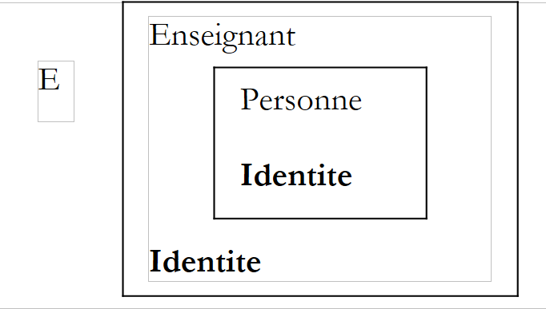
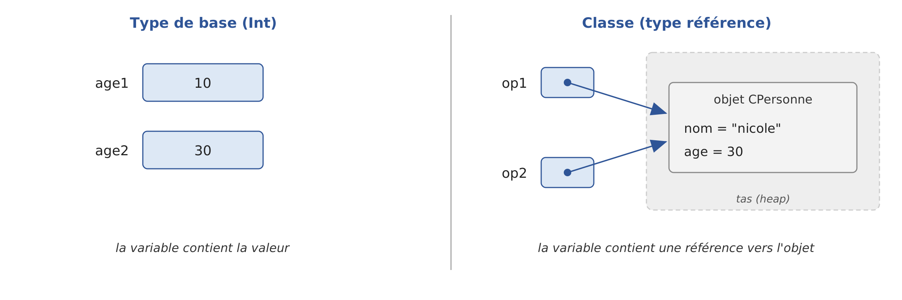

4. Classes, Interfaces, Data Classes
4.1. Objects by Example
4.1.1. Overview
We will now explore object-oriented programming through examples. An object is an entity that contains data defining its state (referred to as fields, attributes, properties, etc.) and functions (referred to as methods). An object is created based on a template called a class. For example, a class named [C1] declares two properties—[var p1: Type1] and [var p2: Type2]—and two methods—[fun m3(...): Type3 { ... }] and [fun m4(...): Type4 { ... }], all enclosed within the curly braces of the declaration [class C1 { ... }].
From the class [C1], we can create many objects such as [o1], [o2], … All of them will have the properties [p1], [p2], … and the methods [m3], [m4], … However, they will have different values for their [pi] properties, thus each having its own state. If [o1] is an object of type [C1], [o1.p1] refers to the property [p1] of [o1], and [o1.m3(...)] refers to thecall to the [m3] method of [o1].
Let’s consider an initial object model: the class [Personne].
4.1.2. A program consisting of several files
In the examples from the previous chapter, a program fit into a single source file. From now on, a program can consist of multiple source files: for example, one class per file, plus the main program. Unlike Java, Kotlin does not require any connection between a file’s name and the classes it contains: a file can contain multiple classes and high-level functions. The convention—which we will follow—is nevertheless to place an important class in a file that bears its name: the class *[Personne] is in the file *[Personne.kt].
The programs in this chapter are grouped together in the Gradle project [04-classes], structured like the one in the previous chapter ([03-bases]): each program is a package within the [src/main/kotlin] directory. The multi-file program we are studying is the [personnes] package:
Both files begin with the line [package personnes]: they belong to the same package and can be seen without an import statement. The file [Main.kt] contains the high-level function [main]; the compiler places it in a class named JVM, named after the file [MainKt], whose full name is [personnes.MainKt]. This is the name provided to Gradle to run the program:
Gradle compiles all the files in the project, then executes the [main] method of the specified class. In IntelliJ IDEA, simply click the green triangle displayed in the margin, next to the [main] function. The compiler writes a [.class] file (containing the intermediate code, the “bytecode,” of JVM) for each class: in this case, [personnes/Personne.class] and [personnes/MainKt.class], in the project’s [build] folder.
4.1.3. Definition of the Person class
The definition of the [Personne] class in the source file [Personne.kt] will be as follows:
- line 1: the class belongs to the [personnes] package. Packages are discussed later in this chapter;
- line 3: The class is not preceded by any visibility keyword; it is public and can be used by all other classes. In Kotlin, [public] is the default visibility;
- Lines 5–7: the class’s three properties. The keyword [var] indicates that they are mutable (the keyword [val] would make them read-only). Kotlin requires that a property be initialized (here with the empty string and 0): unlike Java, there are no implicit default values ([null], 0, [false]). The types of the properties, [String] and [Int], are inferred from these initial values, just as with a local variable;
- lines 10–13: a method that sets the object’s state;
- lines 17–18: a method that displays the object’s state.
Here we have the definition of a class, and thus a data type. When we create variables of this type, we will refer to them as objects or class instances. A class is therefore a template from which objects are constructed. By convention, a class name begins with a capital letter ([Personne]), while a property or method name begins with a lowercase letter ([prenom], [initialise]).
Kotlin uses the term “properties” rather than “fields”: we’ll see a little later that a property is a field accompanied by its getter and setter methods, similar to properties in C#. A private property, as shown here, is simply a field. The members of a class can be data (properties) or methods (functions). These members can be accompanied by one of the following keywords:
Keyword | Access |
[private] | A private member is accessible only by the class’s own methods |
[protected] | A protected member is accessible via the methods of the class and those of its derived classes (see the concept of inheritance below). Unlike in Java, it is not accessible from other classes in the package |
[internal] | An internal member is accessible by any method in the same module, that is, the set of files compiled together (a Gradle project or subproject, a module of IntelliJ IDEA) |
[public] | A public member is accessible by any method, whether or not it is defined within the class. This is the default access level when no keyword is specified |
In general, a class’s data is declared private, while its methods are public. This means that the user of an object (the programmer):
- will not have direct access to the object’s private data;
- can call the object's public methods, including those that provide access to its private data.
The order in which members are declared is arbitrary. Note that the default access level is public, unlike in Java, where the default is package-private: in Kotlin, you must explicitly write [private] to make a member private. Kotlin does not have “package” access; [internal] access, at the module level, serves this purpose.
The keywords [private], [internal], and [public] also apply to top-level declarations (classes, functions, and properties defined outside of any class). A top-level declaration [private] is visible only within its own file.
4.1.4. The method initializes
What is the role of the method [initialise]? Because [nom], [prenom], and [age] are private members of the [Personne] class, a statement like [p1.prenom = "Jean"], written in the main program, is invalid. The compiler rejects it:
The message indicates the file, line, and column of the error ([5:8]), then highlights it with circumflex accents. In IntelliJ IDEA, the error is underlined in red as soon as it is typed, and Gradle displays the same message, preceded by [e:] and the full file path. The message is in English: the Kotlin compiler does not provide French translations for its messages. We need to initialize an object of type [Personne] via a public method. This is the purpose of the [initialise] method. We’ll write [p1.initialise("Jean", "Dupont", 30)]. This syntax is valid because [initialise] is publicly accessible.
4.1.5. Creating an object: no new operator
However, something is still missing. The object must be created. In the program [Main.kt], the expression [Personne()] creates an object of type [Personne]: the class is “called” like a function. Kotlin does not have a new operator, unlike Java and C#. The created object is not yet initialized: its properties have their default values, which are the empty string for [nom] and [prenom], and 0 for [age].
The declaration [val p1 = Personne()] declares [p1] as a reference to this object. If we declare the variable without initializing it, [val p1: Personne]***, and then write ***[p1.initialise("Jean", "Dupont", 30)]***, we are calling the method [initialise] on an object that does not exist, and the compiler reports the error: the variable [p1]* has not been assigned a value.
In Java, you can write [Personne p1 = null;] to indicate that the variable does not yet reference any object; the call [p1.initialise(...)] is accepted by the compiler and causes a [NullPointerException] exception at runtime. As we saw in the previous chapter, Kotlin distinguishes between types that allow the value [null] and those that do not. The type [Personne] does not allow it:
The type *[Personne?]* does accept it, but the compiler then rejects a direct method call:
You must write [p1?.initialise(...)], which calls the method only if [p1] is not [null], or [p1!!.initialise(...)], which tells the compiler that [p1] is not [null]. In the latter case, if the assertion is false, the Java exception is thrown at runtime:
Most of the errors that Java detects at runtime are thus detected by the Kotlin compiler. To make [p1] reference an object, we write [val p1 = Personne()]. Now that [p1] refers to an object, the initialization statement for that object, [p1.initialise("Jean", "Dupont", 30)], is valid.
4.1.6. The this keyword
Let’s look at the code for the [initialise] method:
The statement [this.prenom = p] means that the property [prenom] of the current object ([this]) is assigned the value [p]. The keyword [this] refers to the current object: the one on which the method is executed. How do we know this? Let’s look at how the object referenced by [p1] is initialized in the calling program: [p1.initialise("Jean", "Dupont", 30)]. It is the method [initialise] of the object [p1] that is called. When, within this method, the object [this] is referenced, it actually refers to the object [p1].
When a method of an object references a property [a] of that object, the notation [this.a] is implied: the method [initialise] could have written [prenom = p] and [nom = n]. You must use [this] explicitly when there is an identifier conflict. This is the case with the statement [this.age = age] (line 4), where [age] refers both to a property of the current object and to the parameter [age] received by the method. Within the method, the name [age] alone refers to the parameter; the property must be referred to as [this.age]. Note that a function parameter is read-only: the statement [age = 0] written within the method would be rejected by the compiler.
4.1.7. A Test Program
Here is a short test program. It is written in the source file [Main.kt]:
- line 4: the function [main] is the program’s entry point. As in the previous chapter, it is a high-level function, written outside of any class;
- line 6: creation of a [Personne] object referenced by [p1]. Since the [Personne] class belongs to the same package, it is recognized without needing to be imported. The type of [p1], [Personne], is inferred by the compiler;
- line 7: initialization of the object;
- line 8: display of its state.
Results:
4.1.8. Multiple Classes in a Single File
For a short example, a package containing multiple files is unnecessarily large. As in the previous chapter, we will therefore write a single file—[Classes01.kt], for example—which contains the function [main], possibly other functions, and the classes the program needs. Each file is placed in a package named after it ([classes01]), which allows each program in the project to have its own [Personne] class: the class [Personne] in the file [Classes01.kt] has the full name [classes01.Personne]; the class in the file [Classes02.kt] has the full name [classes02.Personne], and so on. It is executed using the command [gradlew -q run -Pmain=classes01.Classes01Kt].
It is important to understand how the compiler processes such a file. The classes in the file are ordinary, high-level classes, exactly as if they were written in their own file; the high-level functions, including [main], are grouped into a class named after the file, [Classes01Kt]. Compiling the file demonstrates this:
This has a consequence that distinguishes Kotlin from Java. In Java, the classes in a compact source file are nested within an implicit class and share their private members with the [main] method in the file. In Kotlin, there is no enclosing class: a member [private] of a class remains inaccessible to the function [main], even if it is written in the same file. The short examples in this chapter will therefore show the same compilation errors as the program [personnes].
4.1.9. Another way to initialize: overloading
Let’s continue with the class [Personne] and add a second method, [initialise], to it. The program [Classes01.kt] is as follows:
- line 2: the program package;
- lines 4–10: the main program;
- line 14: the class [Personne] is declared after the function [main]. In Kotlin, the order of declarations in a file does not matter;
- lines 21–24: the [initialise] method from the previous paragraph;
- lines 28–31: a second method, [initialise].
We now have two methods named [initialise]: this is valid as long as they accept different parameters (in number or type). The method [initialise] is said to be overloaded. The compiler chooses which method to call based on the actual parameters: [p1.initialise("Jean", "Dupont", 30)] (line 6) calls the first one, and [p2.initialise(p1)] (line 9) calls the second one. The return type alone is not sufficient to distinguish between two methods: two methods with the same name and the same parameters that differ only in their return type would be rejected. We’ll see that in Kotlin, default parameter values often eliminate the need to write multiple versions of the same method.
The parameter of the second method is a reference ([p]) to a person. The properties of the person ([p]) are then assigned to the current object ([this]). Note that the method [initialise] has direct access to the properties of the object [p] even though they are private (lines 29–31). This is always true: a method of a [C] class has access to the private members of all objects of the same [C] class.
Results:
4.1.10. Constructors of the Person class
A constructor is a function called when an object is created. It is generally used to initialize the object. It can accept parameters but does not return a value. If a class [C] has a constructor that accepts n parameters, creating an object of that class is written as [val objet = C(arg1, arg2, ... argn)].
When a class [C] has one or more constructors, one of these constructors must be used to create an object of that class. If a class [C] does not declare any constructors, it has a default constructor with no parameters that does nothing. The object’s properties then retain their initial values. This is what happened in the previous programs, where we wrote [Personne()].
Kotlin distinguishes between two types of constructors:
- the primary constructor, at most one per class, declared in the class header immediately after the class name: [class Personne(prenom: String, nom: String, age: Int)];
- secondary constructors, declared in the body of the class using the keyword [constructor]. When a class has a primary constructor, every secondary constructor must call it, either directly or through another secondary constructor.
The program [Classes02.kt] provides three constructors for the class [Personne]:
- Line 15: the primary constructor. Its three parameters are preceded by [private val]: this is a shorthand notation that declares both a constructor parameter and a private, read-only property with the same name, initialized with the parameter’s value. The class has no other properties: these are declared in the header;
- Line 17: the secondary copy constructor. The notation [: this(p.prenom, p.nom, p.age)] calls the constructor of the same class that accepts three parameters: [String], [String], and [Int]—in this case, the primary constructor. This is referred to as chained constructors. As a result, the initialization code is written only once. This constructor has no body: it has nothing else to do;
- line 20: the secondary constructor with no parameters, also chained to the primary constructor. Since the class has declared a primary constructor with parameters, it no longer has a default constructor: if we want to be able to write [Personne()], we must declare it;
- Lines 4–10: The three constructors are used.
The abbreviated notation in line 15 is equivalent to the following, longer notation, where the parameters of the primary constructor—excluding *[val]*—are simply parameters used to initialize properties declared in the body of the class:
This is much shorter than the Java version, where you must declare the fields and then initialize them one by one in the constructor ([this.prenom = prenom;]…). The primary constructor has no body: the statements to be executed when the object is constructed are placed in [init] blocks, which we’ll cover a little later. We’ll also see that, thanks to default parameter values, Kotlin often doesn’t need secondary constructors: [class Personne(..., private val age: Int = 0)] allows you to write both [Personne("Jean", "Dupont", 30)] and [Personne("Jean", "Dupont")].
Results:
4.1.11. Object References
We use the [Personne] class from the previous program, omitting its parameterless constructor but including the [initialise(String, String, Int)] method from the beginning of the chapter. Its properties are therefore declared using [var] rather than [val]. The test program becomes the following [Classes03.kt]:
The function [print] (lines 7, 10, …) writes its parameter without starting a new line. The two statements on these lines are separated by a semicolon, which is only necessary in Kotlin to write multiple statements on a single line. Results:
When the variable [p1] is declared by [val p1 = Personne("Jean", "Dupont", 30)] (line 6), [p1] references the object [Personne("Jean", "Dupont", 30)] but is not the object itself. In C, this would be referred to as a pointer—that is, the address of the created object. If [p1] were declared as [var p1: Personne? = ...] and we then wrote [p1 = null], it wouldn’t be the object [Personne("Jean", "Dupont", 30)] that would be modified, but rather the reference [p1] that would change its value. The object would be “lost” if it were not referenced by any other variable: the memory it occupies would later be reclaimed by the Java virtual machine’s garbage collector, which executes Kotlin programs just like Java programs.
When we write [val p2 = p1] (line 9), we initialize the reference [p2]: it “points” to the same object (it refers to the same object) as the reference [p1]. Thus, if you modify the object “pointed to” (or referenced) by [p1], you also modify the one referenced by [p2] (lines 4–5 of the results). Note that [p1] and [p2] are declared alongside [val]: the keyword prohibits changing the reference contained in the variable, not modifying the referenced object, which is what the call to [p1.initialise(...)] does (line 15).
When you enter [val p3 = Personne(p1)] (line 12), a new object, [Personne], is created. This new object will be referenced by [p3]. If you modify the object referenced by [p1], it does not affect the object referenced by [p3] (line 6 of the results).
Finally, on line 22, the operator [===], applied to two object references, indicates whether they refer to the same object: [p1] and [p2] refer to the same object, while [p1] and [p3] refer to two different objects, although they have the same content (line 7 of the results). This is the [] operator in Java. In Kotlin, the [] operator compares the contents of the objects by calling their [equals] method: we’ll see later how to define it. For a class that does not define [equals], as in this case, [p1 == p3] still compares the references and evaluates to [false].
4.1.12. Passing Object Reference Parameters
In the previous chapter, we saw that Kotlin, like Java, passes function parameters by value: the function receives a copy of the actual parameter’s value. Let’s see what this means when the parameter is an object reference. To do this, we’ll use the class [StringBuilder] (the class of JDK, which Kotlin uses directly). A [String] object cannot be modified: an operation like [s.uppercase()] returns a new [String] object. A [StringBuilder] object, on the other hand, is a mutable string: its [append] method appends characters to the string without creating a new object.
In Java, the example assigned a new object to the parameter [sbf1] of the called function. This is not possible in Kotlin: a function parameter is read-only, just like a variable [val]. The compiler rejects the statement [sbf1 = StringBuilder("essai1*****")]:
The program [Classes04.kt] therefore copies the parameter [sbf1] into a modifiable local variable:
- Lines 5–6: two references, [sb0] and [sb1], to objects of type [StringBuilder];
- line 8: these are passed to the function [changeStringBuilder], whose result—a third reference—is assigned to [sb2];
- lines 13–24: a high-level function, which has the formal parameters [sbf0] and [sbf1]. When the function starts, [sbf0] and [sb0] are two distinct references that point to the same object: the reference [sb0] was copied into [sbf0] (references are passed by value). The same applies to [sbf1] and [sb1];
- lines 19–20: the local variable [sbl] first receives the reference [sbf1], then the reference to a new object. This is what the Java program did with the parameter [sbf1] itself.
Results:
Explanations:
- [sb0] and [sbf0] are two distinct references to the same object. This object was modified via [sbf0] (line 16). This modification is visible via [sb0] (line 4 of the results);
- [sb1], [sbf1], and, initially, [sbl] are three distinct references to the same object. [sbl] is assigned a new value and now points to a new object (line 20). This does not change the value of [sbf1] or that of [sb1], which continue to point to the original, unmodified object (lines 3 and 4 of the results);
- a Kotlin function cannot, therefore, change the value of a variable belonging to the caller. To pass a new object to the caller, it returns it as a result (lines 22 and 24). When there are multiple results, they are grouped into an object: a pair ([Pair]), as seen in the previous chapter, or a data class (see below).
Remember that a function can modify the object referenced by a parameter, but not the caller’s variable that contains the reference. Like Java, and unlike C#, Kotlin does not pass parameters by reference; it goes a step further than Java by prohibiting any assignment to a parameter, which prevents confusion between the parameter and the caller’s variable.
4.1.13. Temporary Objects
In an expression, you can explicitly call an object’s constructor: the object is created, but there is no variable to access it later (to modify it, for example). This temporary object is created for the purpose of evaluating the expression and is then discarded. The memory space it occupied will later be automatically reclaimed by the garbage collector, whose role is to reclaim memory space occupied by objects that are no longer referenced by the program’s data.
Consider the following program, [Classes05.kt], where the constructors of the [Personne] class display a message. This is an opportunity to introduce the initialization block [init]:
- line 5: the object [Personne("Jean", "Dupont", 30)] is constructed and then passed to the copy constructor, which constructs a second object; the method [identifie] is then called on that object. Neither of the two objects is referenced by a variable;
- lines 9–11: Since the primary constructor has no body, the statements to be executed when the object is constructed are placed in a [init] block. A class can have multiple [init] blocks: these are executed, along with the initializations of the properties declared in the class body, in the order in which they are written. They are part of the primary constructor and have access to its parameters;
- lines 15–16: A secondary constructor may have a body. It is executed after the constructor called by [: this(...)]—in this case, the primary constructor with its [init] blocks.
Results:
The results show the sequential construction of the two temporary objects. The first is constructed by the primary constructor (line 1 of the results). The second is constructed by the secondary constructor, which begins by calling the primary constructor—hence the execution of the [init] block (line 2)—and then executes its own body (line 3). In Java, the copy constructor in the example was not chained to the primary constructor and displayed only its own message; in Kotlin, as long as a class has a primary constructor, every object passes through it: the [init] blocks are always executed.
4.1.14. Properties: Getter and Setter Methods
In Java, the convention is to declare private fields and provide access to their values through public methods: getters, such as [getAge()], and setters, such as [setAge(int)]. These methods are written by hand (or generated by the development environment), and the user of the class writes [p.setAge(p.getAge() + 1)]. Kotlin, like C#, has properties: a public property is data that the user reads and writes using dot notation, like a field, but which is actually read and written through a getter and a setter. The compiler generates them. The program [Classes06.kt] demonstrates this:
- line 14: the class
*[Personne]* fits on a single line. The three parameters of the primary constructor are preceded by*[var]*: these are three public properties (default visibility), which are both readable and writable. Since the class has no body, the curly braces are omitted; - line 7: reading the properties [p.prenom], [p.nom], and [p.age]. Each read operation is a call to the property’s accessor;
- Line 9: Writing the property [age], that is, calling its modifier.
Results:
The [javap] tool from JDK, which displays the contents of a [.class] file, shows what the Kotlin compiler generated for the [Personne] class (the [-p] option also displays private members):
Each property resulted in a private field (lines 3–5), a public getter, and a public setter (lines 7–12), which follow the naming convention established in the early days of Java, namely “JavaBeans”: the getter for the property [age] is named [getAge], and its setter is [setAge]; a boolean property whose name begins with [is]—such as [isActif]—has a getter with the same name, [isActif], and a setter named [setActif]. This is important: many Java libraries (such as Jackson for JSON and Hibernate for databases, which we’ll use later) rely on this convention to locate an object’s data; they can find the data for Kotlin objects without any difficulty. Conversely, a Kotlin program that uses a Java class writes [p.age] to call [p.getAge()], and [p.age = 56] to call [p.setAge(56)]. We also note that the class and its methods are [final]: we’ll see with inheritance that in Kotlin, classes and methods are final by default.
The notation [p.age = 56] resembles the assignment of a public field. The difference is significant: because it uses a setter, we can—without changing anything in the code written by the class’s users—later assign a setter to the property that controls the values it receives. This is the subject of the following section. In Kotlin, therefore, we never write accessors or setters in the Java style: we declare properties.
4.1.15. Setters That Validate Received Values
The advantage of setters over public fields is the ability to control the values assigned to the fields: a setter can validate the received value and throw an exception if it is invalid. Kotlin allows you to provide a property with a custom getter ([get]) and a custom setter ([set]). Consider the program [Classes07.kt]:
The three properties have a custom modifier that validates the received value:
- lines 39–44: the property [prenom]. Its declaration is followed, on the subsequent lines, by the definition of its modifier, [set(value) { ... }]. The parameter [value] is the value assigned to the property (the name [value] is conventional, as in C#); its type is that of the property. The property has no custom accessor: it retains the generated accessor, which returns the stored value;
- Line 42: The function [require(condition) { message }], discussed in the previous chapter, throws a [IllegalArgumentException] exception—the exception designed to signal an invalid parameter—if the condition is false. The message, calculated by the lambda expression within curly braces, is constructed only in this case. The function [isNotBlank] returns [true] if the string contains at least one character other than a space. There is no need to test the value [null] as in Java: the property is of type [String], not [String?], and the compiler prohibits assigning [null] to it;
- Line 44: In a getter or setter, the keyword [field] refers to the field that stores the property’s value (known as the “backing field”). Do not write [prenom = value]: this would be a call to the setter itself, which would call itself indefinitely;
- lines 47–58: The properties [nom] and [age] are constructed using the same pattern;
- line 37: the class has a primary constructor with no parameters. The initial values of the properties ([""] and 0) are assigned directly to the fields, without going through the modifiers;
- Lines 62–65: A secondary constructor that initializes the object using the modifiers. This allows it to take advantage of the checks performed by the modifiers, which are written only once. Here, [this.prenom = prenom] is the call to the modifier for the property [prenom] with the value of the parameter [prenom].
Why not write [class Personne(prenom: String, nom: String, age: Int)] with properties initialized by [var age = age]? Because initializing a property at its declaration directly affects the field without calling the modifier: an age of -4 would be accepted without an error. To verify the values received by the primary constructor, we write the checks in a [init] block, or, as shown here, we pass the values through the modifiers.
In Java, modifiers called by the constructor had to be declared as [final]: otherwise, a derived class could have redefined them, and the parent class’s constructor would have called the new version even before the derived class’s constructor was executed. In Kotlin, classes and their members are final by default: this precaution is unnecessary.
Results:
Line 3 of the results shows that the assignment [p.age = -4] (line 10) was rejected by the modifier: [ex.message] is the exception message. Lines 15–18: An object is created using the parameterless constructor and then initialized by its setters. Lines 21–23: The name containing a space is rejected (line 5 of the results). Lines 29–30: The three-parameter constructor rejects an empty first name (line 6 of the results).
Java does not have object initializers—a syntax that would allow multiple properties to be set within the object creation expression itself. Neither does Kotlin, but it offers two equivalent solutions: named and default-valued constructor parameters, and the [apply] function. We’ll cover them in the next two paragraphs.
4.1.16. Read-Only Properties and Optional Parameters
A property declared with [val] must be assigned a value exactly once—at the time of its declaration, in the primary constructor, or within a [init] block—and cannot be modified thereafter. The compiler enforces this. This is equivalent to the [final] field in Java: the property has only a getter, no setter. The [Classes08.kt] program illustrates several cases, as well as default parameters and named arguments:
- line 33: the first name is a [var] property, which is read-write; the last name and city are [val] properties, which are read-only. The constructor assigns a value to them, which cannot be changed afterward. The parameter [age], without [val] or [var], is simply a constructor parameter;
- lines 35–36: The property [age] is initialized with the parameter [age]. It is readable by everyone, but its modifier is private ([private set]): it can only be modified by the class’s methods, such as [vieillir] (lines 43–44). The modifier retains its default behavior: it does not require a body;
- lines 39–40: a computed property. It has a custom accessor, [get() = ...], which calculates its value each time it is read based on the other properties; it has no field to store a value. To the user of the class, nothing distinguishes it from another property: [p.identite] (line 7). This is equivalent to the [getIdentite()] method in the Java version;
- lines 14–16: three statements that the compiler rejects, for the reasons given in the comments. If we uncomment them, the compiler reports the following (we have also uncommented the [Contact(null)] statement mentioned on line 24):
- line 49: the class [Contact] has a required property, email, and an optional property, phone. The optional nature of the phone property is expressed by a default value for the constructor’s parameter [telephone]: [val telephone: String = "inconnu"]. If the argument is omitted, as in line 19, the parameter takes this value. In Java, which does not have optional parameters, a second constructor—chained to the first—was required; in Kotlin, a single constructor suffices. Default values are used in the same way for the parameters of any function;
- line 22: the arguments are named: [telephone = "02 41 00 00 00"]. They can then be provided in any order, and the call is more readable when multiple parameters have the same type. Named arguments also allow you to omit only one optional parameter among several: with [f(a: Int = 0, b: Int = 0)], you can write [f(b = 5)];
- Lines 51–52: The mandatory nature of the email is first expressed by the parameter type: [String] does not accept the value [null], and the call [Contact(null)] is rejected at compile time (last error above). In Java, this had to be checked at runtime ([Objects.requireNonNull]). The next step is to reject an empty email address: this is the role of the block [init], which is executed when the object is constructed. On line 26, an email address consisting of a single space is rejected.
Results:
Note how short the declarations are: the [Personne] class, which took up about fifty lines in Java with its getters, setters, and modifier, takes up only about fifteen lines in Kotlin.
4.1.17. The apply and also functions instead of fluid mutators
In Java, when an object has many optional fields, the number of constructors increases and setter calls become longer. A common technique is to have each setter return the current object ([this]): the calls can then be chained together—this is referred to as “chained” methods: [new Personne().setPrenom("jean").setNom("Dupont").setAge(30)]. In Kotlin, default parameters and named arguments make this technique much less useful. And when you want to set multiple properties of an object immediately after its creation, the standard library provides “scope functions” that can be used with any object, including [apply] and [also]. The program [Classes09.kt] illustrates these and, in passing, introduces the properties [lateinit]:
- lines 7–10: [objet.apply { ... }] executes the block between curly braces with [objet] as the current object: within the block, [prenom = " jean "] refers to [this.prenom = " jean "], where [this] is the new person. Then [apply] returns the object itself, which is assigned to [p]. The assignment acts as an object initializer; each assignment goes through the property modifier and thus its validations;
- lines 39–46: the modifiers for the first name and last name assign the value returned by the function [verifier] to the field;
- lines 64–66: The validations for the first name and last name, which are identical, are factored into the function [verifier]. It does not use any properties of a person: we have made it a high-level function, declared as [private], and therefore visible only in the file [Classes09.kt]. In Java, this would have had to be implemented as a private static method of the class. The function [trim] removes the leading and trailing spaces from the string;
- line 59: the type of the computed property [identite], [String], is inferred from its accessor expression;
- Lines 25–26: [objet.also { ... }] executes the block by passing it the object as a parameter, referred to as [it], and then returns the object. It is used for a secondary action—such as a progress display, as shown here—without interrupting the call chain. Here, [apply] returns the person, [also] displays it and then returns it in turn, and it is assigned to [p2]. Line 25: The three assignments in the [apply] block are written on a single line, separated by semicolons;
- Line 56: A property of a type other than [null] must, in principle, be assigned a value upon creation. The keyword [lateinit] (“late initialization”) waives this requirement: the property [ville] will be assigned its value later (line 33). If it is accessed before then, a [UninitializedPropertyAccessException] exception is thrown (lines 29–31). [lateinit] applies only to a property [var] of an object type that is not [null] ([String], but not [Int] or [String?]) and without custom accessors or mutators. It is used when the value is provided after the object is constructed, for example by a dependency injection framework such as Spring (Chapter 6) or by an initialization method in a test. Within the class, the expression [::ville.isInitialized] indicates whether the property has been assigned a value.
Results:
The first name "jean," which was entered with spaces around it (line 8), was stored without them (line 1 of the results). Invalid modification attempts were rejected, and the person was not changed (lines 2–4 of the results). Line 6 of the results is the message for exception [UninitializedPropertyAccessException].
There are three other scope functions: [let], seen in the previous chapter with the values [null], [run], and [with]. They differ in how the block refers to the object ([this] or [it]) and in what they return (the object or the result of the block):
Function | Object in the block | Result | Typical Use |
[apply] | [this] | The object | Configure a newly created object |
[also] | [it] | The object | Follow-up action (monitoring, verification) in a sequence |
[let] | [it] | The result of the block | Process a non-[null] value: [x?.let { ... }] |
[run] | [this] | The result of the block | Calculate a value from an object |
[with] | [this] | The result of the block | [with(objet) { ... }]: Multiple calls on the same object |
To build complex objects, Java often uses the “Builder” design pattern: an auxiliary class, equipped with fluent methods, collects values and then constructs the final object. In Kotlin, a constructor with named parameters and default values replaces this pattern in most cases.
4.1.18. Class members: the companion object
Suppose we want to count the number of [Personne] objects created in an application. We could manage a counter ourselves, but we risk overlooking temporary objects that are created here and there. It seems safer to include a statement in the constructor of the [Personne] class that increments a counter. This counter cannot be an ordinary property, since each object has its own properties: it is a property of the class itself, not of a particular instance of that class.
Java declares such a member using the keyword [static]. Kotlin does not have a [static] keyword: class members are declared in a companion object ([companion object { ... }]), a single object attached to the class and declared within the class body. Its members are used with the class name: [Personne.nbPersonnes], [Personne.inconnue()]. Here is an example, [Classes10.kt]:
- lines 31–37: the companion object for the class [Personne];
- lines 33–34: the class property [nbPersonnes], initialized to 0 (of type [Long] due to the suffix [L]). It is readable by everyone ([Personne.nbPersonnes], line 8), but its modifier is private: only the class [Personne] can modify it. There is no need to define, as in Java, a private field and a static accessor method [getNbPersonnes()];
- line 37: a class method. It is called using the class name: [Personne.inconnue()] (line 10). A method of the companion object does not have a current [Personne] object: it cannot directly use a person’s properties. A method that creates and returns an object of its class, such as this one, is called a “factory”;
- lines 21–22: the block [init] increments the counter. It is part of the primary constructor, and the copy constructor—which is chained to the primary constructor—therefore also executes it.
The last element of the program is a singleton object, [Journal], declared using the keyword [object] (lines 42–48):
- A declaration such as [object Journal { ... }] declares both a class and its single instance, which is created automatically when it is first used. There is no constructor: no other [Journal] object can be created. The object is referenced by its name: [Journal.ecrire(...)];
- an object has a state—in this case, the number of the last message written—which is preserved from one call to the next;
- A companion object is a special case of a singleton object: one that is attached to a class.
Results:
The program correctly counted the temporary object created on line 7. The log numbered its two messages. Compilation produces a class for the companion object, [Personne$Companion], alongside the classes [Personne], [Journal], and [Classes10Kt]; a method of the companion object is thus, for JVM, an instance method of the [Personne.Companion] object. To allow a Java program to call it as a static method ([Personne.inconnue()] rather than [Personne.Companion.inconnue()]), it is annotated with [@JvmStatic].
From the beginning, we’ve been using functions that, in Java, would be static methods: [println], [readln]… In Kotlin, these are top-level functions, declared outside of any class. This is the Kotlin way of writing what Java calls a utility class, such as the class [Math]: a file containing high-level functions (the standard library provides [kotlin.math.sqrt] and [kotlin.math.PI]), or, if you want to group functions under a single name, a [object]. The companion object is reserved for items that are truly specific to the class: factories, constants, and counters.
4.1.19. An array of people
An object is a piece of data like any other, and as such, multiple objects can be grouped into an array [Classes11.kt]:
- Line 6: creates an array of 3 elements. The function [arrayOfNulls<Personne>(3)] initializes these elements with the value [null], meaning they do not reference any objects: the array type is therefore [Array<Personne?>], an array of references that can hold the value [null]. Colloquially, we refer to this as an “array of objects,” even though it is merely an array of object references. The creation of the array—which is itself an object—does not create any objects of the same type as its elements; this must be done subsequently;
- lines 7–9: creation of the 3 objects of type [Personne];
- lines 11–12: display the contents of the array [amis]. The variable [ami] is of type [Personne?]: the compiler requires the safe call [ami?.identifie()], which does nothing if [ami] is equal to [null].
Results:
The element type [Personne?] indicates that an array created empty in Java contains [null]. This is avoided in Kotlin by creating the array with its elements, as shown in the following paragraph.
4.1.20. Type Inference and Array Initialization
The program [Classes12.kt] demonstrates the syntax that simplifies the creation of objects and arrays:
- Line 6: The type of the variable, [Personne], is inferred from the expression that initializes it. The variable is nonetheless typed: [p1] can only refer to a person. This has been the standard notation in Kotlin since the beginning of the course; the Java equivalent is the keyword [var]. Kotlin goes a step further than Java: type inference also applies to properties ([identite], line 38) and to the return type of functions whose body is an expression;
- line 36: all properties have a default value. The primary constructor can therefore be called without arguments, [Personne()] (line 7), and the person is then assigned its properties (lines 8–10). There is no need to declare a parameterless constructor;
- Lines 12–16: An array created and populated by the function [arrayOf(...)], which receives the values of the elements. The size of the array is the number of values; its type, [Array<Personne>], is derived from the type of the values: the elements cannot be of type [null]. A trailing comma (line 16) is allowed in an argument list, as in any parameter list: it makes it easier to add an element;
- line 18: the loop variable [ami] is of type [Personne]: no safe call this time;
- line 22: an array created on the fly, passed as a parameter. This is called an anonymous array: it is not referenced by any variable in the function [main]. Unlike in Java, there is no difference in syntax depending on whether the array is created in a declaration or elsewhere;
- line 24: the constructor [Array(taille) { i -> ... }] creates an array in which each element is calculated by the lambda based on its index [i];
- lines 29–31: a high-level function that takes an array of people.
Results:
We will make little use of arrays of objects: the next chapter introduces lists ([List], [MutableList]), which are more flexible ([listOf(p1, p2)] is written as [arrayOf(p1, p2)]).
4.2. Inheritance by Example
4.2.1. Overview
Here we discuss the concept of inheritance. The purpose of inheritance is to “customize” an existing class so that it meets our needs. Suppose we want to create a class [Enseignant]: a teacher is a specific type of person. They have attributes that other people do not have: the subject they teach, for example. But they also have the attributes common to all people: first name, last name, and age. A teacher is therefore a full member of the class [Personne] but has additional attributes. Rather than creating a class [Enseignant] from scratch, we prefer to build upon the existing class [Personne] and adapt it to the specific characteristics of teachers. This is made possible by the concept of inheritance.
To indicate that the class [Enseignant] inherits from the class [Personne], we write [class Enseignant(...) : Personne(...)]: the name of the parent class follows the colon, as in C#, whereas Java writes [extends Personne].
[Personne] is called the parent class (or base class, or superclass), and [Enseignant] is called the derived class (or child class, or subclass). A [Enseignant] object has all the characteristics of a [Personne] object: it has the same properties and methods. These properties and methods of the parent class are not repeated in the definition of the child class; we simply specify the properties and methods added by the child class. A Kotlin class can inherit from only one parent class.
An important difference from Java: in Kotlin, a class is final by default, meaning it cannot be inherited from. To allow derivation, the parent class must be declared [open] (“open”). This is a deliberate choice by the language designers: a class must be designed to be derived from, and the person writing it must state this explicitly.
The examples in this paragraph are two multi-file programs, located in the packages [heritage1] and [heritage2]. In the [heritage1] package, the [Personne] class is defined as follows in [Personne.kt]:
- line 4: the class is open ([open]): subclasses can be derived from it. The primary constructor has three parameters, which are not properties (no [val] or [var]);
- lines 6–19: three properties whose modifiers verify the received value (see program [Classes07.kt]). The checks for the first name and last name, which are identical, are factored into the private function [verifier] (lines 42–44), as in the program [Classes09.kt];
- line 23: the method [identifie] from the first examples has been replaced by the calculated property [identite], which returns the person’s identity instead of displaying it;
- Lines 26–31: The primary constructor’s block [init] initializes the object using property modifiers, increments the person counter, and displays a follow-up message. It is placed after the property declarations: property initializations and the [init] blocks are executed in the order in which they are written, and a property must have been initialized (here with [""] or 0) before it can be used;
- lines 34–37: the person counter from the section on the companion object.
We create a class [Enseignant] that inherits from the class [Personne] [Enseignant.kt]:
The class [Enseignant] adds to the properties and methods of the class [Personne]:
- lines 5–6: The class [Enseignant] derives from the class [Personne]. The header is written on two lines to fit on the page;
- line 5: a property [section], declared in the primary constructor ([var section: Int]), which is the number of the section to which the teacher belongs within the faculty (roughly one section per subject). The property is read-write: it replaces the getter and setter of the Java version;
- Lines 9–10: a [init] block that displays a progress message.
4.2.2. Creating a Teacher Object
A child class does not inherit constructors from its parent class. It must define its own constructors. The header for the [Enseignant] class is as follows:
The primary constructor receives four parameters ([prenom], [nom], [age], [section]) and passes three ([prenom], [nom], [age]) to its parent class—in this case, the class [Personne]—using the syntax [: Personne(prenom, nom, age)] (line 2). We know that this class has a constructor, [Personne(String, String, Int)], which will allow us to create a person using the passed parameters. Once the construction of the [Personne] portion is complete (initializations and [init] blocks of the [Personne] class), the construction of the [Enseignant] object continues with the initialization of its [section] property and the execution of its own [init] blocks. The notation [: Personne(prenom, nom, age)] corresponds to the [super(prenom, nom, age);] statement in the Java constructor; if the derived class does not have a primary constructor, each of its secondary constructors calls the parent class’s constructor via [constructor(...) : super(...)].
In summary, the constructor of a derived class:
- passes to its parent class the parameters that the parent class needs to construct itself;
- uses the remaining parameters to initialize its own properties.
It might have been preferable to directly initialize the properties [prenom], [nom], and [age] directly in the [Enseignant] class, using statements like [this.prenom = prenom]. This is possible here because these properties are public and mutable, but it would be a poor solution, and it would be impossible if they were private: the private members of the [Personne] class are accessible only to methods of the [Personne] class. All other objects, including objects of derived classes as in this case, must access them through public (or protected, such as [protected]) members. Most importantly, the [Personne] part of the object must in any case be instantiated by a constructor of the [Personne] class. If you write [: Personne()] without arguments, the compiler reports that the parameters for the parent class’s constructor are missing:
Using the parent class’s constructor is therefore the correct solution, and it is the standard approach: when creating a child object, you first call the parent object’s constructor and then complete the initializations specific to the child object ([section] in our example).
Finally, if you omit the keyword [open] before the class [Personne], the derivation is rejected:
4.2.3. Inherited Methods
The class [Enseignant] does not define a property named [identite]. The expression [e.identite], where [e] is a teacher, therefore refers to the property [identite] inherited from the class [Personne]: it is public and, by inheritance, becomes a public property of the class [Enseignant]. The same applies to methods. The test program [Main.kt] from the package [heritage1] is as follows:
- line 5: creation of a teacher;
- line 7: display of the teacher’s identity, obtained via the [identite] property inherited from the [Personne] class;
- line 9: the property [section], specific to the class [Enseignant];
- lines 13–14: call to the function [affiche] (lines 22–23) with a teacher and then a person. We’ll return to this in the next paragraph;
- lines 16–17: call to the [toString] method on both objects. We’ll also come back to this.
Results:
We can see that:
- an object [Personne] (line 1 of the results) was constructed before the object [Enseignant] (line 2);
- [e.identite] provided the identity of the teacher’s [Personne] part, without its section (line 3);
- the person counter also counts the teacher (line 10): a teacher is a person.
To obtain a teacher’s complete identity, the class [Enseignant] must define its own property [identite]. This is what the package [heritage2] does.
4.2.4. Polymorphism
Consider a class hierarchy: C0 ← C1 ← C2 ← … ← Cn, where Ci ← Cj indicates that class Cj is derived from class Ci. This implies that class Cj has all the characteristics of class Ci plus additional ones. Let Oi be objects of type Ci. It is valid to write [Oi = Oj] with j > i. Indeed, by inheritance, class Cj has all the characteristics of class Ci plus additional ones. Therefore, an object Oj of type Cj contains an object of type Ci. The operation [Oi = Oj] causes the variable Oi, of type Ci, to reference the object Oj: only the members defined in class Ci can be accessed through it.
The fact that a variable Oi of class Ci can actually reference not only an object of class Ci but any object derived from class Ci is called polymorphism: the ability of a variable to reference different types of objects.
Let’s take an example and consider the function [affiche] from the previous program:
We can pass it either a *[Personne] or a *[Enseignant]: In the latter case, the formal parameter [p], which is of type [Personne], receives a value of type [Enseignant]. Since the type [Enseignant] is derived from the type [Personne], this is valid. The expression [p.identite] used here the property [identite] of the class [Personne], the only one that exists in the program: for the teacher (line 6 of the results), we only obtain the identity of its “Person” part .” Let’s see what happens when the class [Enseignant] has its own property [identite].
4.2.5. Method Redefinition and Dynamic Binding
In package [heritage2], class [Personne] is the same as the one in package [heritage1], with two changes:
- Line 2: The property [identite] is declared as [open]: it can be overridden in a derived class. In Kotlin, methods and properties are final by default, just like classes: only the members [open] of a class [open] can be overridden;
- lines 4–5: an override of the [toString] method, discussed in the following paragraph.
In the [Enseignant] class, the [identite] property is redefined as follows:
- Line 13: The property [identite] overrides the property of the parent class; it has the same name and the same type. It uses the property [identite] from its parent class, designated as [super.identite], to retrieve the “Person” portion, then supplements it with the section specific to the class [Enseignant]. A method is redefined in the same way: same name, same parameters, same return type, and the keyword [override];
- Line 13: The keyword [override] is required. It serves the same purpose as the [@Override] annotation in Java, which is optional: if the property did not redefine anything (e.g., a typo in the name or a different type), the compiler would report the error instead of silently creating a new member. Conversely, a redefinition without
*[override]* is rejected:
- and if the [identite] property of the [Personne] class is not declared as [open], the redefinition is rejected:
- Line 3: The class [Enseignant] is not declared as [open]: it is final, as we’ll explain a little later.
Consider a parent object [E]. This object contains a child object [Personne]:

The property [identite] is defined in both the class [Enseignant] and its parent class [Personne]. The version used by [p.identite] is determined at runtime, based on the actual type of the object referenced by [p], rather than at compile time based on the declared type of the variable. This is known as dynamic binding. To execute [o.m()], the virtual machine searches for a method named [m] in the following order:
- in the class of the [o] object;
- in its parent class, if it has one;
- in the parent class of its parent class, if it exists;
- and so on.
The same applies to a property, where reading the property involves calling its accessor, which is a method. Inheritance therefore allows you to redefine members in the child class that have the same signature as those in the parent class. This is what allows you to adapt the child class to its own needs. The program [Main.kt] from the package [heritage2] is as follows:
Results:
This time, in row 3 of the results, the [affiche] function correctly displayed the teacher's full identity. Lines 11–13 of the program show that, when viewed through a variable of type [Personne] or converted to [Personne] by the operator [as] (the equivalent of the Java operator [(Personne)]), the teacher remains a teacher: it is still the property [identite] of the class [Enseignant] that is used (lines 6–7 of the results). The conversion changes the type of the reference, not that of the object.
In this regard, Kotlin is closer to C# than to Java. In C#, a method can only be overridden if it is declared virtual ([virtual]), and the override is indicated by [override]; in Kotlin, [open] serves the same purpose as [virtual]. In Java, on the other hand, all methods are overridable by default, except those declared as [final]. In all cases, once the method is overridden, the binding is dynamic.
4.2.6. The Any class and the toString method
The [Any] class is the “parent” class of all Kotlin classes. Thus, when you write [class Personne], you are implicitly writing [class Personne : Any()]. It corresponds to the Java class [java.lang.Object]: at runtime, for JVM, it is actually [Object].
The class *[Any] defines three methods, all of which are *[open], and from which all objects inherit:
- [toString(): String]: returns a textual representation of the object. By default, this is the object’s full class name, followed by the character [@] and a hash code written in hexadecimal;
- [equals(other: Any?): Boolean]: indicates whether the object is “equal” to the object [other]. By default, it is only equal to itself: the method compares references, just like the [===] operator. This is the method called by the [==] operator;
- [hashCode(): Int]: returns a hash code for the object, used by dictionaries and sets (next chapter). The methods [equals] and [hashCode] are discussed later.
The [getClass()] method of the Java class [Object] is not a method of [Any]: In Kotlin, the expression [objet::class] returns the Kotlin description of the object’s actual class (of type [KClass]), whose property [simpleName] is the class name; [objet::class.java], or [objet.javaClass], returns the Java description ([Class]).
It was the method [toString] of the class [Any] that was used by the calls [e.toString()] and [p.toString()] from the package [heritage1]: [heritage1.Enseignant@2f0e140b] and [heritage1.Personne@7440e464] (lines 8–9 of the results; the numbers vary from one execution to another). Although we did not redefine the [toString] method in the [Personne] and [Enseignant] classes, the [toString] method in the [Any] class was able to display the object’s actual class name.
In the [heritage2] package, the [Personne] class redefines the [toString] method: [override fun toString() = identite]. The keyword [override] is also required here. Let’s return to the program [Main.kt] in the package [heritage2]:
On line 2, the function [println(message: Any?)] accepts a parameter of type [Any?]; therefore, since [Any] is the superclass of all classes, any object—in this case, a [Enseignant]—can be passed. It prints the result of the object’s [toString] method to the console. Since the binding is dynamic, the [toString] method of the actual object is used—in this case, the one inherited from the [Personne] class. This method returns [identite], a redefined property: for the teacher [e], it is therefore the property [identite] of the class [Enseignant] that is used, as shown in line 8 of the results. It is therefore unnecessary to redefine [toString] in the class [Enseignant].
The same mechanism applies to string templates: in ["... : $personne"] (line 7), the object [personne] is converted to a string by its method [toString]. The loop on line 6 iterates over an array of references to [Personne], which actually point to objects of different types: [personne::class.simpleName] returns the actual class name of each object (lines 10–11 of the results).
4.2.7. Final, open, and sealed classes
The class [Enseignant] in the package [heritage2] is declared as [class Enseignant(...) : Personne(...)], without the keyword [open]: it is final. The declaration [class EnseignantChercheur(...) : Enseignant(...)] would be rejected by the compiler with the message already encountered: [this type is final, so it cannot be extended]. In Java, it’s the opposite: a class is open by default, and you make it final using the keyword [final]. Kotlin’s approach prevents accidental subclassing of a class that was not intended to be subclassed. The same applies to members: a method or property can only be overridden if it is declared as [open]. A member that overrides another ([override]) is itself overridable in subsequent derived classes, unless it is declared as [final override].
Between a class open to all derivations and a final class, Kotlin offers—as Java has since version 17—an intermediate option: the sealed class ([sealed]), for which all direct derived classes are known at compile time. The program [Classes13.kt] illustrates this:
- line 33: the class [Personne] is sealed. Its direct subclasses must be declared in the same package and module as it (in any file within that package). Unlike in Java, there is no list of allowed classes ([permits]): it includes all classes in the package that are its direct subclasses, in this case [Enseignant], [Etudiant], and [Vacataire]. A sealed class is implicitly abstract (see below: you cannot create objects of this class, only of its derived classes) and its constructor is protected: it is intended only for derived classes;
- line 34: the property [identite] is open: derived classes can redefine it;
- Lines 38–43: The classes [Enseignant] and [Etudiant] are final by default. In Java, a class derived from a sealed class must be declared as [final], [sealed], or [non-sealed]; in Kotlin, the default rule suffices;
- Line 47: The class [Vacataire] is open ([open]): it reopens the hierarchy, allowing any class to derive from it. This is equivalent to Java’s [non-sealed]. A third option is to declare it as [sealed] itself. The class has no body: there is nothing to add to the [Personne] class;
- line 50: the class [Intervenant] derives from [Vacataire], which is allowed;
- lines 5–9: The array type, [Array<Personne>], is inferred by the compiler: it is the most specific common type among the four objects;
- lines 26–29: the expression [when], seen in the previous chapter, tests the type of the person here using the operator [is]. In each branch, the compiler knows that [p] is of the type being tested: [p.section] is accepted in the [is Enseignant] branch without explicit conversion. This is “smart casting,” which is explained in more detail at the end of the chapter. Most importantly, the expression [when] has no branch [else]: since the class [Personne] is sealed, the compiler knows that every person is a [Enseignant], a [Etudiant], or a [Vacataire], and that all three cases are handled. A contractor is a temporary worker: they are handled by the third branch;
- lines 19–21: the Java description of the class ([Personne::class.java]) indicates whether it is sealed ([isSealed]) and lists its permitted direct subclasses ([permittedSubclasses]). For a sealed class, the Kotlin compiler produces the same information as the Java compiler: for JVM, the class [Personne] is a sealed Java class.
Results:
If you write a class [Artiste] derived from [Personne] in another package—in this case, the [autres] package—the compiler reports:
And if we remove the branch [is Vacataire] from the expression [when], the compiler reports that not all cases are being handled:
What is the purpose of a sealed class? It allows the author of a class hierarchy to maintain control over it: the author knows that any [Personne] is a [Enseignant], a [Etudiant], or a [Vacataire]. The compiler knows this as well and takes advantage of it in the expression [when]: if a fourth class derived from [Personne] is added later, all [when] expressions that do not handle it are flagged during compilation. A branch like [else], on the other hand, would have masked this omission. This mechanism also applies to interfaces ([sealed interface]), discussed later, and is a very common way in Kotlin to model a closed set of cases: the possible outcomes of an operation (success, failure), the states of a screen, messages exchanged between two programs…
4.3. Operator overloading
Some languages, such as C# or C++, allow you to redefine the meaning of operators ([+], [==], [<]…) for a class. Java does not allow this: you must write methods, such as [a.add(b)] instead of [a + b], [s1.equals(s2)] instead of [s1 == s2], [a.compareTo(b) < 0] instead of [a < b]. Kotlin allows this in a simple and controlled way: each operator corresponds to a method with a fixed name, and all you need to do is declare a method with that name, preceded by the keyword [operator], for the operator to be usable with objects of that class. The expression [a + b] is thus translated by the compiler into [a.plus(b)]. You cannot invent new operators or change their precedence. The main conventions are as follows:
Expression | Translated to | Note |
[a + b], [a - b], [a * b], [a / b], [a % b] | [a.plus(b)], [a.minus(b)], [a.times(b)], [a.div(b)], [a.rem(b)] | arithmetic operators |
[-a], [+a], [!a] | [a.unaryMinus()], [a.unaryPlus()], [a.not()] | unary operators |
[a++], [a--] | [a.inc()], [a.dec()] | The method returns the new value |
[a += b] | [a.plusAssign(b)], or otherwise [a = a.plus(b)] | the same applies to [-=], [*=]… |
[a == b], [a != b] | [a?.equals(b) ?: (b === null)] | [equals] is inherited from [Any]: it is redefined as [override] |
[a < b], [a <= b], [a > b], [a >= b] | [a.compareTo(b) < 0]… | [compareTo] returns a negative, zero, or positive integer |
[b in a], [b !in a] | [a.contains(b)], [!a.contains(b)] | membership |
[a[i]], [a[i] = v] | [a.get(i)], [a.set(i, v)] | indexers (next paragraph) |
[a(x)] | [a.invoke(x)] | an object “called” like a function |
[a..b] | [a.rangeTo(b)] | intervals |
[for (x in a)] | [a.iterator()] | iteration |
The operators [===] and [!==], which compare references, cannot be redefined. Classes in the Kotlin standard library use these conventions, and—thanks to extension functions (discussed later in this chapter)—Kotlin also applies them to classes such as JDK and [BigDecimal]. In a Java class, a method with the expected name and signature ([compareTo], [get]…) can also be used as an operator without the [operator] keyword.
4.3.1. An example
The [listes] package contains a class named [ListeDePersonnes], a list of people, whose methods define the operators [+], [+=], [in], iteration, and indexers. The classes [Personne] and [Enseignant] in this package are simplified versions of those in the [heritage2] package: the properties are read-only ([val]), there are no longer any validations, progress messages, or counters. The [Personne] class gains a comparison operator, [Personne.kt]:
- Line 10: The method [compareTo], declared as [operator], defines the four operators [<], [<=], [>], and [>=] between two people: [p1 < p2] is translated to [p1.compareTo(p2) < 0]. The method must return a negative integer if the current object precedes the object [autre], zero if they are equivalent, and a positive integer otherwise. Here, the people are compared by age: the [compareTo] method for integers does the job.
The people are stored in a mutable list of type [MutableList<Personne>] (lists are covered in the next chapter). Rather than having the [ListeDePersonnes] class inherit from a list class, we place the list in a private property of the class. This is referred to as using composition rather than inheritance: the class *[ListeDePersonnes]* thus exposes only the operations it has chosen. From the list, we use only the following elements:
- the method [l.add(p)], which adds the person [p] to the list [l], and the method [l.addAll(l2)], which adds all elements from the list [l2] to it;
- the property [l.size], which returns the number of elements in the list [l], and the property [l.indices], the range [0..size-1] of its indices;
- the notation [l[i]], which refers to element number i of the list [l], for both reading and writing: Kotlin lists have indexers;
- the method [l.iterator()], which returns an iterator over the elements of the list, and the method [l.joinToString(...)], which constructs a string from its elements.
The definition of the [ListeDePersonnes] class is as follows: [ListeDePersonnes.kt]:
- line 5: the list of people. The function [mutableListOf<Personne>()] creates an empty, mutable list of elements of type [Personne]. The keyword [val] indicates that the property will always refer to the same list; the list’s contents may change. No import is necessary: lists are part of the standard Kotlin library and are imported automatically;
- Line 8: the number of people, as a calculated property;
- Lines 12–16: The method [plus] defines the operator [+] for the operation [l + p], where [l] is of type [ListeDePersonnes] and [p] is of type [Personne] or a derivative thereof. It creates a new list (line 13), copies the people from the current list into it (line 14), and then adds the person [p] (line 15). As with the [+] operator for numbers or strings, the operands are not modified. Since the list [resultat] is of the same class, the method has access to its private property [resultat.personnes]. The returned list is of type [ListeDePersonnes], which allows operations to be chained as in [l + p1 + p2];
- lines 20–21: The method [plusAssign] defines the operator [+=]: it modifies the current list by adding the person [p] to it and returns nothing;
- line 25: the method [contains] defines the operator [in]: ["leduc" in l] is translated to [l.contains("leduc")]. The parameter here is a name; it is the method [indexOf], discussed in the following paragraph, that searches for the person;
- line 28: the method [iterator] allows the list to be traversed using a loop [for (p in l)]. It makes the list iterator private, of type [Iterator<Personne>], which allows only read access to the elements;
- line 54: We redefine the method [toString] to display a list of people in the form (person1, person2, ...), where personi is itself the result of the person’s [toString] method. The [joinToString(séparateur, préfixe, suffixe)] method for lists constructs a string from successive elements—converted to strings by their [toString] method—separating them with the specified separator (here, a comma) and enclosing them with a prefix and a suffix (here, parentheses).
Note that the [ListeDePersonnes] class has no constructor. It therefore uses the default constructor, which takes no parameters and does nothing other than initialize the [personnes] property with the value specified in its declaration. Lines 30–50 are discussed in the following section.
The test program [Main.kt] begins as follows:
- Lines 7–10: two strings with the same content but distinct: the string [s2] is constructed at runtime. The operator [] compares the contents (it calls [equals]*), while the operator *[=] compares the references. In Kotlin, therefore, two strings are compared using [==], which is a classic error in Java. The [<] operator compares two strings based on the order of their character codes: it calls the [compareTo] method, which returns a negative number here because “jean” comes before “paul”;
- Lines 11–13: The class [BigDecimal] derived from JDK (exact decimal numbers, which we will use for the amounts) contains only methods: [add], [multiply], [negate], [compareTo]. The Kotlin standard library adds the unary operators [+], [*], [-]…: you write [a + b] instead of [a.add(b)], and [-a] instead of [a.negate()]. The comparison operators, on the other hand, directly use the method [compareTo] from [BigDecimal]. The import on line 3 is necessary: [BigDecimal] is a class of JDK;
- lines 16–18: the comparison operators defined by the [compareTo] method of the [Personne] class;
- line 22: creation of an empty list of people [l]. The variable is declared as [var]: its value will change;
- line 24: Adds two people using the operator [+], which returns a new list each time;
- line 28: [l + p] creates a new list, [l2]; the list [l] remains unchanged;
- line 35: a teacher is added using the operator [+=], i.e., the method [plusAssign];
- line 41: the operators [in] and [!in];
- Lines 42–45: Iterating through the list using a [for] loop, via the [iterator] method and the [size] property;
- line 26 and following: a string template containing an object uses the redefined method [toString] of the class [ListeDePersonnes].
Results (beginning):
Why are there two operators, when [l = l + p] produces the same output as [l += p]? The operator [+] creates a new list, copies all the people from [l] into it, and then [l] refers to this new list, while the old one is discarded to the garbage collection. The operator [+=], defined by [plusAssign], adds the person to the existing list without copying. Line 33 stores a second reference, [l3], to the list [l]; after the [l3 += ...] operation, both references still point to the same object (line 9 of the results), and the added person appears in [l] (line 8), which proves that the list was not recreated. For a large list, or within a loop, the difference in performance is significant. The choice between the two styles is reflected in the library: the immutable objects [String] and [BigDecimal] return new objects; the mutable lists and [StringBuilder] are modified.
Why was it written as [l3 += ...] and not [l += ...]? Because [l] is a variable of [var]: for that variable, [l += p] could just as easily mean [l.plusAssign(p)] as it could mean [l = l.plus(p)], and the compiler refuses to choose:
With a variable like [val]—or [l3]—only the first translation is possible. In practice, a class defines one or the other: [plus] for an immutable class, [plusAssign] for a mutable class. Kotlin lists follow this rule: a [List] (read-only) has the [+] operator, a [MutableList] has the [+=] operator; for a [MutableList] referenced by a variable [var], the compiler reports the same ambiguity.
Operator overloading should not be overused: it only makes sense if the operator retains its usual meaning (addition, comparison, membership, etc.). In other cases, a method with an explicit name is preferable.
4.4. Indexers: the get and set operators
Here, we continue to use the class [ListeDePersonnes]. If *[l]* is a [ListeDePersonnes] object, we want to be able to refer to person number i in the list *[l] for both reading and writing, using the array notation ***[l[i]]***. C# calls this an indexer. Java does not allow this: the [[i]] notation is reserved for arrays in Java, and methods are written as [get(int i)] and [set(int i, valeur)]. In Kotlin, these two methods, declared as [operator], define the [l[i]] notation: [l[i]] is translated to [l.get(i)], and [l[i] = p] is translated to [l.set(i, p)]*. This is how Kotlin lists and dictionaries are used as arrays.
- line 2: the method [get] returns person #i from the private list [personnes], which is itself identified by its index;
- lines 4–5: The method [set] assigns the person [p] to it;
- lines 9–11: a second, read-only indexer (there is no method [set(String, Personne)]). The index is not necessarily an integer: [l["martin"]] returns the person named “martin,” or [null] if that person is not in the list. The result type, [Personne?], indicates this. The two methods [get] are overloads: the compiler chooses based on the index’s type. An indexer can also have multiple parameters: [m[i, j]] is translated to [m.get(i, j)];
- lines 15–21: we also want to be able to obtain the position in the list of the person with a given name, or -1 if that person is not in the list. The name [indexOf] is that of the equivalent method for lists and strings. The loop iterates through the indices of the list ([personnes.indices]); the names are compared using the operator [==] (line 17).
The test program continues as follows:
- line 3: call to the method [set];
- line 5: call to method [get];
- Line 11: Call to the [indexOf] method;
- line 13: call to the [get] method with an integer index;
- line 20: call to the [get] method with a name. The [?:] operator replaces the result of [null] with a message.
Results (end):
4.5. Value and Reference
4.5.1. Basic Types and Classes
Other languages, such as C or C#, offer structures in addition to classes: types whose variables directly contain data, rather than a reference to an object. Java does not have them: it distinguishes between the eight primitive types ([int], [double], [boolean]…), whose variables contain the value itself, and reference types (classes, arrays…), whose variables contain a reference to an object. Kotlin also has no structures, and, from the programmer’s perspective, it doesn’t even have primitive types: everything is an object; [Int], [Double], and [Boolean] are classes whose methods ([10.toString()], [age.coerceAtLeast(0)]) are called. But as we saw in the previous chapter, the compiler translates the base types [Int], [Long], [Double], [Boolean], [Char]… into the primitive types of the JVM ([int], [long]…) whenever possible: a variable [Int] then contains the value itself. The program [Classes14.kt] highlights the difference with a class:
- lines 39–41: a class with two public, mutable properties: [nom], [age].
Results:
The declaration [val age1 = 10] (line 6) reserves a memory location that contains the integer 10: the value of [age1] is the integer itself. In the case of the class, the object ([nom], [age]) is created explicitly by calling the constructor [CPersonne()] (line 15). The object is placed in a memory area managed by the garbage collector, the heap, and the value of [op1] is the address (the reference) of this object.
When [var age2 = age1] is written in the program (line 7), the value of [age1]—the integer 10—is copied into [age2]: this is a value copy. Modifying [age2] does not modify [age1] (line 2 of the results). Now consider the instruction [val op2 = op1] (line 20). The value of [op1] is copied into [op2], but since this value is the object’s address, the object itself is not duplicated: [op1] and [op2] refer to the same object. If the object pointed to by [op2] is modified, the object pointed to by [op1] is also modified since they are the same (lines 5–6 of the results). To obtain a second object, you must create it and copy the properties of the first one into it (lines 30–32): modifying the copy does not modify the original (lines 7–8 of the results).

From these explanations, we can conclude that:
- the value of a variable of a basic type ([Int], [Double]…) is the data itself;
- The value of a variable of a class type is the address of the object it points to;
- Assignment and parameter passing always copy the value of the variable: the data for a basic type, the reference for an object.
The compiler cannot always use a primitive type from JVM. A variable of type [Int?] must be able to hold a value of type [null], which a [int] cannot do, and an element of a [List<Int>] list must be an object (JVM generics only accept reference types; see below): in these cases, the integer is placed inside a [java.lang.Integer] object, which Java calls “autoboxing.” The Kotlin programmer does not need to worry about this, with one exception: they must not compare two numbers using the [===] operator, which would compare the references of the [Integer] objects. The compiler issues a warning ([identity equality for arguments of types 'Int?' and 'Int?' is prohibited]) for this. Numbers are compared using [==], which always compares the values.
To represent a simple composite data type (a point, a color, a date, an amount) that is treated as a value, immutable classes are used: their objects cannot be modified after creation. Sharing a reference to an immutable object is safe: no one can modify it, and the object then behaves like a value. Two tools round out the system: the method [equals], called by the operator [==], which compares two objects by their content, and the data classes ([data class]), which declare an immutable class equipped with this method in a single line. This is the subject of the following two paragraphs.
4.5.2. Equality of Two Objects: equals and hashCode
As we have seen, the [===] operator, when applied to two references, indicates whether they refer to the same object. The [] operator calls the [equals] method, and the one inherited from [Any]* does the same thing as *[=]. For two distinct objects with the same content to be considered equal, a class must redefine the method [equals] and, necessarily along with it, the method [hashCode]. The program [Classes15.kt] demonstrates this:
- lines 25–35: The method [equals] overrides that of the class [Any]. Its parameter is of type [Any?]: a person can be compared to any object, and even to [null]. The method follows a standard pattern:
- lines 27–28: an object is equal to itself;
- lines 31–32: the expression [other !is Personne] is true if [other] does not reference an object of type [Personne] (or a derived class), in particular if it is equal to [null]. [false] is then returned;
- Line 35: the properties are compared. After the test on line 31, the compiler knows that [other] is a [Personne]: [other.age] can be used without conversion. This is the “smart cast” we’ve already encountered with the expression [when]. The names are compared with [==], which calls the [equals] method for strings;
- line 39: the method [hashCode] returns an integer calculated from the same properties, in this case by the method [Objects.hash] of JDK (hence the import on line 4). The rule is mandatory: two objects that are equal in the sense of [equals] must have the same hash code. Dictionaries and sets (next chapter) sort objects based on this code and would no longer function if the rule were not followed;
- line 11: [===] compares references, while [==] compares contents. In Java, we would write [p1.equals(p2)]; in Kotlin, we write [p1 == p2], which is more readable;
- Lines 15–17: A set [HashSet], created by the function [hashSetOf], never contains two equal objects: adding [p2], which is equal to [p1], has no effect, and the search for a new person ([paul, 10]) using the operator [in] is successful;
- lines 19–20: The [find] function of the collections returns the first element that satisfies the condition given by the lambda, or [null] if there is none (lambdas are covered in Chapter 7). The variable [inconnue] is therefore equal to [null]. The operator [==] accepts an operand [null]: [a == b] is translated to [a?.equals(b) ?: (b === null)]. There is no [NullPointerException] exception to worry about, unlike the Java call [a.equals(b)] when [a] is equal to [null].
Results:
Writing [equals] and [hashCode] by hand is tedious and prone to errors; IntelliJ and IDEA can generate them (via the “Code / Generate…” menu). Data classes, on the other hand, provide them automatically.
4.5.3. Immutable Objects
The program [Classes16.kt] offers three ways to define immutable data:
- lines 34–38: a manually written immutable class. Its properties are read-only ([val]); it is final—as all Kotlin classes are by default—so that no derived class can add mutable state to it. To “move” a point, the method [deplacer] returns a new point (line 36). The statement [a.x = 5] (line 6) would be rejected by the compiler: ['val' cannot be reassigned];
- line 42: a data class ([data class]). The header [data class Couleur(val r: Int, val v: Int, val b: Int)] declares a class with three properties, a three-parameter constructor, and the methods [toString], [equals], and [hashCode], all of which use the properties of the primary constructor, as well as the methods [copy] and [component1], [component2], and [component3], presented below. This is the Kotlin equivalent of the Java record, which appeared long before it; since the properties are declared with [val], the class is immutable;
- line 13: a property is accessed by its name, [rouge.r];
- line 14: two objects with the same content are equal in the sense of [==], even though they are distinct;
- line 16: Since a data class is immutable, it cannot be modified; instead, a copy is created in which certain properties have been changed. This is the role of the generated method [copy], where each parameter’s default value is the current value of the property: with named arguments, only the properties that change are specified. In Java, you have to write “wither” methods ([avecV(int v)]…) by hand to achieve the same result;
- Line 19: destructuring, as discussed in the previous chapter using pairs: the three variables receive the values of the three properties, in the order specified by the constructor. This relies on the generated methods [component1], [component2], and [component3]. The variable names can be chosen freely: we wrote [bleu] because [b] is already in use;
- Lines 45–48: a value class ([value class]), annotated as [@JvmInline]. It has a single property—in this case, an integer—which it “wraps” to give it its own type and validation rules: a [Age] is not just any [Int]; a function that expects a
*[Age]will not accept a weight or a number of children, and a negative age is rejected by the*[init]block (line 26). The advantage of the value class is that, at runtime, the compiler usually replaces it with the wrapped value: a variable of type [Age] is simply a [int] of the JVM, with no object created on the heap. This provides the safety of a distinct type without its cost. A value class is immutable; it has generated [toString], [equals], and [hashCode], just like a data class.
Results:
The [toString] generated for a data class displays the class name and its properties (line 2 of the results); the same applies to the value class (line 6). Note here that a data class is the most concise way to declare a small, immutable piece of data: this is the type we will use for the tax bracket tiers in the example application in this chapter. Data classes are discussed in detail later.
4.6. Interfaces
4.6.1. A First Example
An interface is a set of method declarations (and, in Kotlin, property declarations) that forms a contract. A class that chooses to implement an interface commits to providing an implementation for all the abstract members defined in the interface. The compiler verifies this implementation.
For example, here is the (simplified) definition of the [Iterator<T>] interface from the Kotlin standard library, which allows you to iterate over the elements of a collection: [interface Iterator<out T> { operator fun next(): T; operator fun hasNext(): Boolean }]. The methods of the interface are defined only by their signatures: they have no body and are implicitly public and abstract (the keyword [out] will be explained in the section on generics; the keyword [operator] indicates that the loop [for] can use these methods). It is the classes that implement the interface that provide the code for its methods. A class named [C] declares that it implements the interface by listing it after the colon, just like a parent class but without parentheses (an interface does not have a constructor): [class C : Iterator<String>], and it must then define the two methods [override fun hasNext(): Boolean { ... }] and [override fun next(): String { ... }]. Whereas Java distinguishes between [extends] (inheritance) and [implements] (implementation), Kotlin, like C#, uses the same colon; the keyword [override] is required to implement an interface member, just as it is to override a method of the parent class.
A common convention (though not universal—neither JDK nor the Kotlin library follows it) is to start an interface name with the letter I. The following examples make up the [statistiques] package (directory [src/main/kotlin/statistiques]). Consider the following interface [IStats.kt]:
The interface [IStats] has:
- a property [moyenne]: the mean of a series of values;
- a property [ecartType]: the standard deviation of this series.
Note that it is not specified anywhere which series of values is being referred to. It could be the average grades of a class, the monthly average sales of a particular product, the average temperature in a given location… This is the principle behind interfaces: they assume the existence of members in the object but not that of specific data.
Where the Java interface declared two methods, [double moyenne()] and [double ecartType()], the Kotlin interface declares two abstract properties, [val moyenne: Double] and [val ecartType: Double]. An interface property says nothing about how the value is obtained: an implementation class can store it in a field, calculate it each time it is read via an accessor *[get]*, or calculate it on the first read and then store it. This is demonstrated by the following two classes. An interface property [val] promises only read access; a property [var] would additionally promise write access.
One possible implementation of the [IStats] interface could be a class used to store the grades of students in a class for a given subject. A student is characterized by the following [Eleve] data class: [Eleve.kt]:
The student is identified by their first and last name. The data class, introduced above (in the section “Immutable Objects”) and discussed in detail later, can be summarized in a single line: it replaces the record in the Java version. A grade is represented by the following data class: [Note] [Note.kt]:
The grade is defined by the student being graded and the grade itself. The class redefines the [toString] method generated by the compiler to display a grade in the form [prénom,nom,valeur]. Note the form [fun f() = expression]: a function whose body consists of a single expression can be written using the symbol [=], without curly braces or [return], in which case the result type is inferred from the expression.
The grades of all students in a given subject are compiled in the following class [TableauDeNotes]:
- Line 7: The class [TableauDeNotes] implements the interface [IStats], listed after the colon. It must therefore implement the properties [moyenne] and [ecartType]. Its primary constructor declares two read-only properties: the subject in which the object stores the grades and the array of grades;
- lines 10–14: the implementation of the two interface properties, preceded by the keyword [override]. We assume here that the grades passed to the constructor will not change thereafter. Therefore, the mean and standard deviation of these grades are calculated immediately and stored in the property fields: the property initializers are executed when the object is constructed, in the order in which they are written, which allows the standard deviation calculation to use the mean that has already been calculated. In Java, it would have taken four fields ([final]) and a constructor to achieve the same result;
- line 11: [if] is a Kotlin expression: it replaces the Java operator [condition ? valeur1 : valeur2] and sets the mean of an empty array to -1. The [sumOf] extension function for arrays and collections sums the values that the [{ it.valeur }] lambda calculates for each element (lambdas are covered in Chapter 7; [it] refers to the current element there): it replaces the cumulative loop [for] from the Java version;
- line 14: [x.pow(2)] calculates x², and [sqrt] calculates the square root. These are functions from the [kotlin.math] package, imported on lines 3–4; they replace the static methods [Math.pow] and [Math.sqrt] from Java (which remain usable);
- line 16: the method [toString] uses the array extension function [contentToString], which returns the array elements in square brackets, separated by commas, with each element converted to a string by its method [toString], here that of the [Note] class. This is equivalent to the static [Arrays.toString] method in Java. The [toString] of a Kotlin array, like that of a Java array, displays only its type and a hash code.
In the previous class, grades were stored in an array. It was not possible to add a new grade after the [TableauDeNotes] object was constructed. We now propose a second implementation of the [IStats] interface, called [ListeDeNotes], where this time the grades are stored in a list, with the ability to add grades after the initial construction of the [ListeDeNotes] and [ListeDeNotes.kt] objects:
- Line 7: The class [ListeDeNotes] implements the interface [IStats]. The constructor parameter [notes] is not preceded by [val]: it is a simple parameter used only to initialize the property on line 9;
- Line 9: The notes are now placed in a mutable list ([MutableList<Note>]), a copy of the list received by the extension function [toMutableList]. Kotlin distinguishes between read-only collections ([List]) and mutable collections ([MutableList]); the copy ensures that the caller cannot modify the list stored by the object behind our backs (see Chapter 5);
- lines 12–13: The list is exposed as type [List<Note>], which is read-only: external code can read the notes but cannot add new ones without calling the [ajouter] method. This pair of a private property [_notes] and a public property [notes] of a more restricted type is a common Kotlin idiom known as a “backing property”;
- lines 20–24: We can now add a note to those already stored. The mean and standard deviation are no longer calculated at construction time but on demand, within the accessors of the interface’s properties: [moyenne] (lines 28–29) and [ecartType] (lines 32–33). Once calculated, these values are stored so they are not recalculated with every request: they are said to be cached. Adding a note invalidates the cache;
- lines 16–17: the cache. Its type, [Double?], is a nullable type (Chapter 3): the value [null] signifies “not yet calculated.” Whereas Java used the wrapper class
*[Double]to access the value*[null], Kotlin simply adds a question mark to the type; - Line 29: The accessor reads as follows: the cached value if it is not [null] (Elvis operator [?:]), otherwise the result of
***[calculerMoyenne()]***, which the function*[also]stores in the cache before returning it. [x.also { ... }] executes the block with [it = x] and then returns [x]: it is used to graft a secondary action (in this case, caching) onto an expression. The compiler knows that the result of the expression is never [null]: it is of type [Double]*, as required by the interface; - lines 35–41: the two calculations, written using [sumOf]. Note, on line 39, the “early exit” style: the function returns -1 immediately if the list is empty;
- line 44: the [toString] for a list displays its elements in square brackets, without the need for a special function.
A test program might look like the following [Main.kt]:
- line 5: creates an array of students using the [arrayOf] function;
- line 6: creation of an array of grades. The grades are written as [14.0], not [14]: Kotlin does not implicitly convert a [Int] to a [Double], and the constructor for [Note] expects a [Double];
- line 8: a [TableauDeNotes] object whose mean and standard deviation are displayed on line 10;
- line 12: an object [ListeDeNotes], whose mean and standard deviation are displayed on line 13. The extension function [toList] converts the array into a list; the class [ListeDeNotes] creates a modifiable copy of it. In Java, you would have to write [new ArrayList<>(List.of(notes))];
- line 15: add a new note, then refresh the display;
- Lines 25–26: The function [afficheStats] takes a type [IStats] as a parameter, which is an interface type. This means that the actual parameter can be any object that implements the interface [IStats]. When using a data object of an interface type, only the interface members implemented by that object are used. The rest are ignored. This property is similar to the polymorphism we saw with classes. If a set of classes Ci that are not related to each other through inheritance (and therefore cannot use inheritance-based polymorphism) has a set of methods with the same signature, it may be useful to group these methods into an interface I that all the relevant classes would implement. Instances of these classes
Cican then be used as actual parameters of functions that accept a formal parameter of typeI—that is, functions that use only the members of theCiobjects defined in the interfaceI, and not the specific properties and methods of the variousCiclasses; - lines 18–21: A variable can be of the type of an interface. It can then refer to any object of a class that implements the interface. The compiler allows access only to the members of the interface (and to those of the class
*[Any]*, such as[toString]*). The type must be specified here; without it, the compiler would have inferred the type [TableauDeNotes]* from the initial value, and the assignment on line 20 would have been rejected.
The package contains two high-level functions, [main] and [afficheStats], defined in the file [Main.kt]: the class JVM that contains them is therefore named [statistiques.MainKt].
Results:
In a string template, a number [Double] is converted to a string by the [Double.toString] method of JVM, which always writes the number with a decimal point and at least one decimal place (16.0), regardless of the workstation’s language. For a French-style display, use ["%.2f".format(x)], as in the following example.
Finally, note that interfaces can be implemented multiple times; that is, you can write [class ClasseDerivee : ClasseDeBase(), I1, I2, ..., In], where the Ij are interfaces: a class inherits from only one class (whose constructor is called, hence the parentheses), but can implement as many interfaces as it wishes. An interface can itself inherit from one or more other interfaces: [interface I3 : I1, I2].
4.6.2. Interface methods with a body
A Kotlin interface can provide a default implementation for some of its methods: simply give them a body, without any specific keyword (Java requires the keyword [default]). A class that implements the interface can then use this implementation or provide its own. This makes it possible, for example, to add a method to an already published interface without requiring all classes that implement it to be modified. An interface property can similarly have a default accessor [get]. An interface can also contain private functions. However, Kotlin does not have static members ([static]), neither in interfaces nor in classes: their role is fulfilled by the companion object ([companion object]), discussed above, which an interface can have just as a class can. The program [Classes17.kt] provides an example:
- lines 21–37: the interface [IForme]:
- line 23: an abstract method [surface], to be implemented;
- line 26: a method [description] with a default implementation. This implementation may use the other methods of the interface ([surface], [formater]). The expression [this::class.simpleName] returns the simple name of the object’s class ([Carre]): [this::class] is the Kotlin class ([KClass]) of the object, equivalent to [getClass()] in Java;
- lines 29–30: a property with a default accessor. An interface has no state: it cannot store a value, and therefore an interface property never has a field. It is either abstract or computed by an accessor;
- line 33: a private function, accessible only by the interface’s methods. ["%.2f".format(valeur)] formats the number with two decimal places, following the conventions of the system’s locale—in this case, the French decimal point. The string extension function [format] is the Kotlin equivalent of [String.format];
- lines 36–37: the companion object for the interface. Its method [carreUnite] is called using the interface’s name: [IForme.carreUnite()] (line 8), just like the static method in the Java version. It is a factory;
- Lines 42–43: The class [Carre] only implements [surface]; it uses the [description] method by default. It is declared as [open] because a class inherits from it later on. In Java, the class [Carre] would have had to be declared as [static] because the interface creates squares; in Kotlin, classes declared in a file are all top-level, so this issue does not arise;
- Lines 47–50: The class [Cercle] provides its own method [description]. The format [%s] inserts the radius converted to a string by [Double.toString] (“1.0”), while the format [%.2f] inserts the area with two decimal places. The constant [PI] comes from the [kotlin.math] package;
- line 14: the default method is inherited by the class [Carre] just like any other method: it can be called on a variable of type [Carre];
- lines 54–58: a second interface, with an abstract property [couleur] and a default method [description], with the same signature as that of [IForme];
- lines 63–66: the class [CarreColore] derives from [Carre] (which implements [IForme]) and implements [IColoree]. It therefore inherits two [description] methods by default. The compiler then requires the class to redefine the method; otherwise, it rejects the class (see below). The new method can call either of the inherited versions using the syntax [super<Type>.methode()], where [Type] is the parent class or interface whose version is desired: on line 64, the method combines both. Java writes [I1.super.methode()];
- line 63: the abstract property [couleur] of the interface [IColoree] is implemented directly in the primary constructor by [override val couleur: String];
- line 66: the property [nom] of the interface [IForme], which had a default accessor, is redefined as a property with a field: the class itself can store a value.
Results:
Here are the errors the compiler generates when a class [C] implements two interfaces, [I1] and [I2], each of which has a method [fun f() = ...] without redefining it, and when an interface attempts to initialize a property ([val compteur: Int = 0]):
Unlike an abstract class, an interface therefore has no state: it cannot declare stored properties. Constants, which in Java are fields [static final] of the interface, are placed in Kotlin within its companion object ([const val]).
Finally, for readers coming from Java, note that a Kotlin interface method with a body is compiled (since Kotlin 2.2) into a method [default] of the generated Java interface: a Java class can therefore implement a Kotlin interface without rewriting these methods.
4.7. Abstract Classes
An abstract class is a class that cannot be instantiated. You must create derived classes, which can then be instantiated. Abstract classes can be used to factor out code across a lineage of classes. Let’s examine the following example, which forms the package [utilisateurs] [Utilisateur.kt]:
- Line 4: The class is declared abstract using the keyword [abstract]. An abstract class is implicitly open to inheritance: there is no need to add [open];
- Lines 4–6: The primary constructor of the [Utilisateur] class. This class stores information about a web application’s users. The application has various types of users who are authenticated via a username and password (lines 5–6). These two pieces of information are verified against a directory (LDAP) for some users, against a database for others, and so on. To make the primary constructor visible, you must explicitly include the keyword [constructor] after the class name: [protected constructor(...)]. The constructor is [protected]: it is intended for the constructors of derived classes. The comma following the last parameter (line 6) is allowed: it makes it easier to add a parameter later;
- line 10: the information is verified by a method named [identifie]. Because the identification method is not known at this level, it is declared abstract (line 15) using the keyword [abstract]. An abstract method has no body: derived classes will provide one. A class that has an abstract method must itself be declared abstract. The method [identifie] returns a string specifying the user’s role (basically, what they are authorized to do), or [null] if the user is not recognized: its type is therefore [String?];
- Line 10: If the user is not recognized, an exception is thrown. The Elvis operator [?:] evaluates the expression to the role returned by [identifie] if it is not [null], and otherwise executes the expression on the right, in this case, [throw ExceptionUtilisateurInconnu(...)]. In Kotlin, [throw] is an expression (of type [Nothing]), which allows for this compact syntax. The property [role] is of type [String] and is non-nullable: the compiler knows that it cannot be [null]. No [throws] clause is necessary: Kotlin does not have checked exceptions (Chapter 3);
- line 12: the method
*[toString],* which identifies an instance of the class.
We assume here that the developer wants to control the construction of instances of the class [Utilisateur] and its derived classes, perhaps because they want to ensure that an exception of a certain type is thrown if the user is not recognized. Derived classes will be able to rely on this constructor. To do so, they must provide the method [identifie]. Note that the initialization of the property [role], which is part of the object’s construction, calls a method redefined by the derived classes even though those classes have not yet performed their own initialization: the method *[identifie] must therefore not use properties of the derived class, which have not yet been initialized (a non-nullable property could even be set to *[null] there!). This is a practice that should be handled with caution. The Kotlin compiler does not flag this; it is IntelliJ IDEA that highlights it through a code inspection (“Leaking 'this' in constructor of non-final class”). In this case, it is intentional and safe, because the methods of the derived classes do not use any properties.
The [ExceptionUtilisateurInconnu] class is as follows:
- Line 4: It derives from the [Exception] class (an alias for [java.lang.Exception]) and has a single constructor that takes an error message as a parameter, which is immediately passed to the parent class’s constructor. One line is all it takes. In Java, a class derived from [Exception] is a checked exception: the compiler verifies that any method capable of throwing it declares it using a [throws] clause. Kotlin does not perform this check: all exceptions in Kotlin behave like Java’s unchecked exceptions. If a Kotlin method is to be called from Java code that wants to catch the exception, it is marked for Java using the [@Throws(ExceptionUtilisateurInconnu::class)] annotation. The Kotlin compiler also does not require a version number [serialVersionUID].
We now derive the [Utilisateur] class from the parent class [Administrateur]:
- Line 3: The primary constructor simply passes the parameters it receives to its parent class: [: Utilisateur(login, motDePasse)]. The parameters [login] and [motDePasse] are not preceded by [val]: these are simple parameters, with the corresponding properties declared in the parent class;
- Lines 5–8: The [identifie] method of the [Administrateur] class. Suppose an administrator is identified by a directory named LDAP. This method implements the abstract method [identifie] from its parent class. It retains the [protected] access level of the method it overrides: in Kotlin, an overridden method inherits the visibility of the overridden method by default (it can extend it, but not restrict it). Its return type is
*[String]*, not*[String?]: an overridden method can return a more specific type than the method it overrides, and a*[String]is a special case of*[String?]*.
The classes [Observateur] and [Inconnu] also derive from the class [Utilisateur]. They differ from the [Administrateur] class only in their [identifie] method. The method in the [Observateur] class assumes that an observer is identified by a database and returns the “observer” role:
The method for class [Inconnu] returns the reference [null] to indicate that the user was not recognized; its result type is therefore [String?]:
Ultimately, the objects [Administrateur], [Observateur], and [Inconnu] are initialized by the same code, that of the parent class [Utilisateur]. This class uses the [identifie] method provided by these classes. A test program might look like the following [Main.kt]:
Note that on lines 5 and 6, the [Utilisateur.toString()] method is used by the [println] function. On line 7, the constructor throws a [ExceptionUtilisateurInconnu] exception, which is caught on line 8: the object is not created, and nothing is displayed by [println]. The [try] block is not required by the compiler, as it was in Java: without it, the exception would terminate the program. Line 11, if uncommented, is rejected by the compiler, which gives two reasons:
You cannot call a protected constructor outside of derived classes, and, more importantly, you cannot create an object of an abstract class.
Results:
An abstract class is similar to an interface: both declare members that other classes must implement. However, an abstract class can have state (stored properties), constructors, and code common to its derived classes; in contrast, a class can derive from only one abstract class, whereas it can implement multiple interfaces. The two are often combined: an interface defines the contract, while an abstract class that implements it factors out the code common to multiple implementations. This is what the example application in this chapter will do. Finally, recall that the sealed class ([sealed class]), seen earlier, is an abstract class whose derived classes are all known to the compiler: we will use it later with the expression [when].
4.8. Generic Classes, Interfaces, and Functions
4.8.1. Generic Classes and Functions
Suppose we want to write a class [PaireEntiers] that stores two integers and can swap them: two properties, [var premier: Int] and [var second: Int], and a method, [echanger()], that swaps their values using a temporary variable, [val temp]. If we then wanted a pair of strings, followed by a pair of people, we would write two more classes, [PaireChaines] and [PairePersonnes], identical to the previous one except for the type: [String] or [Personne] instead of [Int].
Generic classes, interfaces, and functions address the need for code that differs only in the type of certain data. Kotlin has had them since its first release; they are based on the generics introduced in JVM with Java 5 (2004), with which they share the strengths and certain limitations (type erasure, discussed later), along with some notable improvements (declarative variance, reified types). It should be noted that Kotlin, like Java, does not support passing parameters by reference: a function cannot swap the values of two variables from the caller, but it can swap two elements of an object, a pair, or an array.
The program [Classes18.kt] contains a generic class, a generic function, and a second generic class:
- lines 44–58: The class [Paire] is parameterized by a type denoted as [T], enclosed in angle brackets after the class name. You can name it whatever you want; by convention, it is an uppercase letter ([T] for type, [E] for element, [K] and [V] for key and value). This type, [T], is then used in the class just like any other type: for the constructor parameters, the two properties, and the temporary variable [temp] (line 53), from which the compiler infers the type [T]. The class [Paire] is said to be a generic class;
- lines 46–49: two properties initialized by the constructor parameters, which have the same names. They are declared as [var] because the method [echanger] modifies them, but their accessor [set] is private ([private set]): external code can read [pp.premier], but cannot assign a value to it. This is equivalent to the private fields and their accessors [getPremier] and [getSecond] in the Java version;
- Lines 52–55: Swapping the two elements. Fans of Kotlin idioms sometimes write this on a single line: [premier = second.also { second = premier }] ([also] returns the value of [second] after executing the assignment in the block). The version using a temporary variable is more readable;
- Line 7: When using a generic class parameterized by types T1, T2, …, these types can be specified within angle brackets. Here, [Paire<Int>] is a pair of integers. Unlike Java, which requires [Paire<Integer>] and rejects [Paire<int>], Kotlin has only one type, [Int]: the compiler uses the wrapper class
*[java.lang.Integer]*forJVMwherever an object is required, as shown here; - lines 11 and 17: most of the time, the type isn’t specified; the compiler infers it from the actual constructor parameters, here [String] and then [Personne]. This is the equivalent of Java’s “diamond” operator [new Paire<>(...)], but more concise;
- line 21: the property [premier] of a [Paire<Personne>] is of type [Personne], without conversion;
- lines 63–66: a high-level generic function. The parameter of type [<T>] is declared between the keyword [fun] and the function name. In Java, a class named [Generic2] was required to contain the static method; in Kotlin, a function can exist outside of any class. It swaps elements i and j of an array of elements of type [T]. The type [Array<T>] is a Kotlin array of objects (the equivalent of [T[]] in Java);
- line 26: the function [echanger] is called, specifying the type [T] between [<>]. In fact, the compiler is able to infer [T] from the type of the actual parameters. Therefore, the syntax in line 30 is valid, and this is the one used in practice. Note that [arrayOf(1, 2, 3)] creates a [Array<Int>] (an array of [Integer] objects), to which the function is applied; a [IntArray] array (created by [intArrayOf]), which is an array of primitive integers [int[]], would not be accepted: as in Java, a type parameter cannot refer to a primitive type of JVM;
- Lines 70–86: A generic class with a state: a stack of elements of type [T]. Elements are pushed onto the top of the stack and popped from the top. The elements are stored in a mutable generic list of type [MutableList<T>] (line 72), created by the generic function [mutableListOf<T>()], which is itself parameterized by the stack’s type, [T]. The number of elements is a calculated property [taille]. The function [removeLast] retrieves and returns the last element of the list. An empty stack causes a [IllegalStateException] exception, the exception thrown when an operation is requested from an object that is not in the expected state: this is precisely the exception thrown by the Kotlin function [check(condition) { message }] when the condition is false (line 85);
- line 34: a stack of people. Here, the type must be specified, since there is no way for the compiler to infer it. The compiler guarantees that it will contain only people: the statement on line 40, when uncommented, is rejected ([argument type mismatch: actual type is 'String', but 'Personne' was expected]). The method [depiler] returns an object of type [Personne], without conversion;
- lines 91–92: the person is a data class for which the method [toString] has been redefined.
Results:
4.8.2. Generic parameter bounds
In the class [Paire<T>], the compiler knows nothing about the type [T]: it allows only the methods of class [Any] ([toString], [equals], [hashCode]), and even then, only through the [?.] operator: by default, [T] can indeed be a nullable type! The implicit bound of a generic parameter is [Any?]. To use other methods, you must constrain the generic parameter by specifying, after the colon, the type from which it must be derived:
Constraint | Meaning |
[<T : Classe>] | T must be the specified class or a derived class |
[<T : Interface>] | T must implement the specified interface |
[<T> ... where T : I1, T : I2] | Multiple constraints: they are listed in a [where] clause, placed before the body of the function or class |
[<T : Comparable<T>>] | a bound that uses T itself: T must be comparable to T |
[<T : Any>] | T must be a non-nullable type |
The syntax is the same as for inheritance: Java writes [<T extends Classe>] and [<T extends Classe & I1 & I2>], while C# writes [where T : Classe]. As in Java, there is no constraint requiring it to have a parameterless constructor: you cannot write [T()] in a generic class (see type erasure below). The program [Classes19.kt] uses a constraint:
- line 8: a pair of integers. Unlike the Java version, there is no error to report here: [Paire<Int>] is allowed, and the compiler uses the class [Integer] in the generated code;
- line 10: since the implicit bound is [Any?], the type [T] can be a nullable type: the pair [pn] contains a string and the value [null]. To prevent this, we would have declared [class Paire<T : Any>];
- Lines 46–49: The generic function [ordonner] requires that the type [T] implement the interface [IValeur] (lines 54–55). This interface has a property [valeur], used on line 48, which returns the value of the object of type [T]. Without the bound, the compiler would reject the expression [paire.premier.valeur]: any [T] type does not have a [valeur] property. The two elements of the pair are swapped only if the value of the first is greater than that of the second: the function [ordonner] sorts the two elements in ascending order by value;
- lines 59–68: The class [Aleatoire] implements the interface [IValeur]. The value of an instance is a random number between 0 and 99 (line 61), provided by a random number generator in the class [kotlin.random.Random] shared by all instances: it is stored in the class’s companion object (line 68), which serves the same purpose as the static field in the Java version. This generator is initialized with a fixed “seed”: it therefore always produces the same sequence of numbers, making the results reproducible. This is not the same algorithm as that of the [java.util.Random] class: the resulting sequence is therefore not the same as that of the Java version. If reproducibility is not required, the default generator [Random.Default] (for example, [Random.nextInt(100)]) is used; or, for security purposes, the class [java.security.SecureRandom];
- lines 73–77: The class [Chaine] also implements the interface [IValeur]: the value of an instance is the length of the character string passed to the constructor, calculated by the property accessor;
- lines 15–19: Pairs of objects of type [Aleatoire] are sorted. The function [repeat(5) { ... }] executes the block five times;
- lines 22–25: A pair of objects of type [Chaine] is sorted;
- line 26: if this line is uncommented, the compiler reports that the type [Int] is invalid.
Results:
Here are the errors encountered during compilation once line 26 is uncommented:
The compiler attempted to infer the type [T]: the pair constraint requires [T] = [Int], and the bound constraint requires that [T] implements [IValeur]; since the two constraints are incompatible, it cannot find a type [T] (“uninferred T”). If you specify the type yourself—[ordonner<Int>(pi)]—the message is more straightforward: [type argument is not within its bounds: type parameter 'T (of fun <T : IValeur> ordonner)' must be subtype of 'IValeur', but actual: 'Int'].
4.8.3. Generic Interfaces: Comparable<T> and Comparator<T>
To illustrate the concept of a generic interface, we’ll sort a list of people according to different criteria. For this purpose, Kotlin provides functions for mutable lists (and arrays) that sort the collection in place, and functions for all collections that return a new, sorted list without modifying the original. We’ll use several of them:
- [liste.sort()] sorts the list according to the natural order of its elements: These elements must implement the [Comparable<T>] interface, whose sole method, [operator fun compareTo(other: T): Int], compares the current object to the [other] object. This is the Java interface [java.lang.Comparable], as seen from Kotlin;
- [liste.sortWith(comparateur)] sorts the list according to the order defined by a comparator object, which implements the [Comparator<T>] interface (an alias for [java.util.Comparator]), whose method [fun compare(a: T, b: T): Int] compares two objects;
- [liste.sortedWith(comparateur)], [liste.sortedBy { ... }], and [liste.sortedByDescending { ... }] return a new sorted list.
The methods [compareTo] and [compare] follow the same rule: they return a positive number if x > y, 0 if x == y, and a negative number if x < y. It is up to the developer to define the meaning of the operators <, ==, and >. For example, if [p1] and [p2] are two [Personne] objects, we can say that p1 > p2 if the name of [p1] comes after the name of [p2] in alphabetical order. This will result in an ascending sort based on the people’s names. If we want to sort by age, we’ll say that p1 > p2 if the age of [p1] is greater than the age of [p2]. To sort in descending order, simply reverse the signs of the results.
We now know enough to sort a list of people. The program [Classes20.kt] is as follows:
- lines 8–11: the editable list of people. The Java version sorted an array; the same functions [sort] and [sortWith] exist for Kotlin arrays;
- Lines 47–51: The class [Personne] implements the generic interface [Comparable<Personne>]: its objects are comparable to other people. Its method [compareTo] (line 49) defines the natural order of people, in this case, the order of ages. The [a.compareTo(b)] method for integers returns a negative, zero, or positive number depending on whether [a] is less than, equal to, or greater than [b]: this is exactly what the [compareTo] method expects (Java writes [Integer.compare(a, b)]). The parameter is called [other] in the interface; we keep this name when redefining it, otherwise the compiler—which allows named arguments—would issue a warning;
- line 16: sorting in natural order;
- line 19: sorting the list of people by last name and first name. The parameter of the function [sortWith] is an instance of the class [CompareNoms], which implements the generic interface [Comparator<Personne>];
- lines 55–66: the class [CompareNoms]. Its method [compare] implements the method [compare(a: T, b: T)] of the interface [Comparator<T>], where [T] = [Personne]. Strings are not compared using the [compareTo] method, which follows the order of character codes (uppercase letters before lowercase, accented letters after "z"), but rather by a [java.text.Collator] object (line 57) that applies the sorting rules for the French language. Kotlin directly uses a class from JDK here;
- lines 22–24: sorting by descending age. This time, the comparator is an anonymous object: the expression [object : Comparator<Personne> { ... }] declares an unnamed class that implements the [Comparator<Personne>] interface and immediately creates an instance of that class. This is equivalent to Java’s anonymous class ([new Comparator<Personne>() { ... }]). The body of the object provides the method [compare]. An anonymous object avoids having to declare a class that is used only once;
- Line 27: The method [compareTo] of the interface [Comparable] is declared as [operator]: the operators [<], [>], [<=], and [>=] can therefore be applied to people ([p1 > p2] is translated to [p1.compareTo(p2) > 0]), as we saw earlier with operator overloading;
- Lines 29–30: The Kotlin library creates comparators: [compareBy(comparateur) { it.nom }] returns a comparator for people that compares their names (the value calculated by the lambda) using the specified comparator, in this case [Collator]; [thenBy(comparateur) { it.prenom }] adds a second criterion, used in case of a tie on the first criterion. Both types of [compareBy] (the element and the key) are specified between angle brackets, as the compiler cannot infer them from the lambda alone. Without a specific comparator, we simply write [compareBy<Personne> { it.nom }.thenBy { it.prenom }]: the keys are then compared in their natural order. The comparator [parNoms] is a better replacement for the class [CompareNoms];
- line 31: the function [sortedWith] returns a new list sorted by the comparator; the list [personnes] remains unchanged;
- line 33: The function [sortedBy] sorts according to the key calculated by the lambda expression—in this case, the first name—in its natural order ([sortedByDescending] would sort in descending order);
- line 35: the original list has not been modified by the functions [sortedWith] and [sortedBy];
- line 40: the function [repeat] repeats a string: the title line is padded with dashes up to 50 characters.
Results:
In this case, the Java version featured three types of classes declared inside another class. Kotlin has the same types, but with different names: a class declared inside another class is nested by default (the equivalent of the Java class [static class]: it is not bound to any object of the enclosing class); an inner class, associated with an object of the enclosing class, is declared using the keyword [inner] ([inner class]); finally, the expression [object : ...] creates an anonymous object. We’ll see in Chapter 7 that we can make it even shorter than an anonymous object for an interface that has only one abstract method, such as [Comparator]: a lambda, [personnes.sortWith { p1, p2 -> p2.age.compareTo(p1.age) }], or, as we just did, a comparator built from a lambda: [personnes.sortWith(compareByDescending { it.age })].
4.8.4. Variance, projections, and type erasure
A [MutableList<Int>] is not a [MutableList<Number>], even though [Int] derives from [Number]: if it were, one could add a [Double] to a list of integers via a variable of type [MutableList<Number>]. The type [MutableList<T>] is said to be invariant: a function that accepts a [MutableList<Number>] rejects a [MutableList<Int>]. In contrast, a read-only list of type [List<Int>] contains a est and a [List<Number>]: since nothing can be added to it, the previous risk does not exist, and every integer read from the list is indeed a number. The type [List<T>] is said to be covariant.
This is a significant difference from Java. In Java, all generic interfaces are invariant, and you have to write wildcards for each utilisation: [List<? extends Number>] for a list you’re reading from, [List<? super Integer>] for a list you’re populating. Kotlin allows you to specify the variance once and for all, at the déclaration of the class or interface: this is declaration variance. The interface [List] is declared as [interface List<out E>]: the keyword [out] means that the type [E] appears only as an “output” (the result of methods and properties of type [val]), which makes the type covariant. Similarly, the interface [Comparable] is declared as [interface Comparable<in T>]: the type [T] appears there only as an “input” (parameter of [compareTo]), which makes the type contravariant: a [Comparable<Number>] is a [Comparable<Int>] (anyone who can compare any number can compare an integer). The compiler verifies that the class adheres to its declaration.
For invariant types like [MutableList], Kotlin also offers type casting, which is equivalent to Java’s wildcards:
Kotlin | Java | Meaning |
[MutableList<out Number>] | [List<? extends Number>] | A list of elements of an unknown type derived from [Number]: you can read [Number] from it, but you cannot add elements to it |
[MutableList<in Int>] | [List<? super Integer>] | a list of elements of an unknown type from which [Int] is derived ([Int], [Number], [Any]): [Int] can be added to this list |
[MutableList<*>] | [List<?>] | a list of elements of an unknown type (star projection): you can read [Any?] |
The program [Classes21.kt] illustrates variance, projections, and a specific feature of the generics in JVM—type erasure—as well as Kotlin’s partial solution to this issue: reified type parameters:
- lines 38–43: The function [somme] accepts a [List<Number>]; therefore, because [List] is covariant, it accepts a list of elements of any type derived from [Number]: [Int], [Double], [BigDecimal]… It reads the elements as [Number] and uses their [toDouble] method. Kotlin, like Java, does not support generic arithmetic: you cannot write [a + b] for two objects of type [T] or [Number], hence the use of [Double]. Where Java would have to write
***[List<? extends Number>], the simple type***[List<Number>]is sufficient; - lines 8–9: the same function adds a list of [Int] to a list of [Double]. [listOf(...)] creates a read-only list;
- Lines 47–49: An editable list, on the other hand, is invariant. To accept a [MutableList<Int>] (line 17), the function declares a projection [MutableList<out Number>]. It can read elements such as [Number], but adding an element (line 48) is rejected: the compiler does not know whether it is a list of [Int] or [Double] ([receiver type 'MutableList<out Number>' contains out projection which prohibits the use of 'fun add(element: E): Boolean']);
- lines 53–55: the function [ajouterEntiers] accepts any mutable list capable of holding [Int], in this case a [MutableList<Number>] (line 11). We follow the rule “producer: [out], consumer: [in]”: a list whose elements are read is written as [out], and a list that is filled is written as [in]. Kotlin’s keywords directly express what Java conveys using [extends] and [super];
- lines 60–67: The generic function [max] returns the largest element in a list. The bound [T : Comparable<T>] requires that the elements be comparable to one another; it applies to strings as well as integers (line 19). In Java, you must write [T extends Comparable<? super T>] to also accept a type whose parent class is comparable; in Kotlin, since the [Comparable] interface is contravariant ([in T]), [T : Comparable<T>] is sufficient. The function [first] returns the first element of the list, and the operator [>] calls [compareTo]. (The Kotlin library already provides the function [maxOf] and, for collections, [max()].);
- Line 71: our own covariant class. The type
*[T]appears there only as an output, as the type of a property*[val]*. Line 21: A***[Boite<Int>]is therefore accepted where a***[Boite<Number>]is expected. If we add a method [fun remplacer(nouveau: T)] to the class, where [T] appears as an input, the compiler rejects the class: [type parameter 'T' is declared as 'out' but occurs in 'in' position in type 'T (of class Boite<out T>)']*; - Lines 74–75: The function [afficherTaille] accepts a list of elements of any type: [List<*>]. It cannot make any assumptions about its elements, which it reads as [Any?]. The function [firstOrNull] returns the first element, or [null] if the list is empty;
- lines 27–29: at runtime, a
***[ArrayList<String>]and a***[ArrayList<Int>]are two objects of the same class*[java.util.ArrayList](*[javaClass]returns the Java class of an object). The compiler checks the generic types and then erases them: the compiled code only recognizes [ArrayList] and [Object], and conversions are inserted where necessary. This “type erasure,” adopted by Java in 2004 to ensure that generic code remains compatible with existing code, also applies to Kotlin, which generates code for the same JVM. This explains several limitations: you cannot write [T()] or test [o is List<String>] ([cannot check for instance of erased type 'List<String>']); however, you can test [o is List<*>]; - Lines 79–81: Kotlin partially bypasses type erasure for the [inline] functions. The code for a [inline] function is copied by the compiler at every point where it is called (we’ll return to this in Chapter 7): at that point, the type [T] is known. If the type parameter is declared as [reified] (“reified”), the function can then use it as a true type: to test [it is T] (line 79), or to obtain its class [T::class] (line 81). Without [reified], the test [it is T] is rejected: [cannot check for instance of erased type 'T (of fun <T> compter)'];
- lines 31–34: use of reified functions. The type is specified between angle brackets: [compter<String>(melange)] counts the strings in the list. The Kotlin library makes extensive use of this mechanism, for example in the function [filterIsInstance<String>()], which returns the elements of a collection that are strings as type [List<String>].
Results:
Unlike other languages such as C#, where interfaces can declare abstract static members to implement generic computations, Kotlin does not allow a type [T] to be required to have a “class” method: the members of an interface’s companion object are called using the interface’s name and are not inherited by the classes that implement it.
4.9. Packages
To print a line to the screen, we use the function [println(...)]. If we look at its definition in the Kotlin library documentation (kotlinlang.org/api), we find that it is part of the [kotlin.io] package. This means that its full name is [kotlin.io.println] and that we could write [kotlin.io.println(...)]. A Kotlin package contains classes, as well as functions, properties, and top-level objects. Several packages are automatically imported into every Kotlin file: [kotlin.*] ([Any], [String], [Int]…), [kotlin.io.*] ([println], [readln]), [kotlin.collections.*] ([List], [listOf]…), [kotlin.text.*] ([StringBuilder], [Regex]…), [kotlin.ranges.*], [kotlin.sequences.*], [kotlin.comparisons.*] ([compareBy]…), [kotlin.annotation.*], and, on JVM, [java.lang.*], and [kotlin.jvm.*]. For the others, a [import] clause is used, placed at the beginning of the file, after the package declaration:
- [import java.text.Collator] imports the class [Collator] from the package [java.text] (without a trailing semicolon, as with all Kotlin statements);
- [import java.util.*] imports all public declarations from the [java.util] package on demand;
- [import kotlin.math.sqrt] imports a top-level function, which can then be used without its package: [sqrt(2.0)]. Kotlin does not require Java’s [import static] clause: classes, functions, properties, and even static members of a Java class ([import java.lang.Math.PI]) are imported in the same way;
- [import espacesdenoms.e2.Personne as PersonneE2] imports a declaration under a different name—an alias—that is valid only within that file.
When the compiler encounters a simple name, it looks for it in the current package and among the imported declarations. A [import] clause adds nothing to the program: it simply avoids having to write out the full names.
When you create a class, you place it in a package. The purpose of packages is to prevent name conflicts between classes, for example, when they are distributed. Consider two companies, E1 and E2, distributing classes packaged in the archives [e1.jar] and [e2.jar], respectively. Suppose a customer C purchases these two sets of classes, in which both companies have defined a class named [Personne]. If company E1 creates its classes in a package named [e1] and company E2 creates its classes in a package named [e2], the two classes [Personne] will then be named [e1.Personne] and [e2.Personne]. The client can import one of them and refer to the other by its full name, or give it an alias. The package resolves the ambiguity. By convention, package names are in lowercase and begin with the reverse domain name of the organization that publishes them ([com.mysql.cj.jdbc], [org.hibernate], [kotlinx.coroutines]…); for our examples, we will use short names.
To place a file’s declarations in a package, you write the declaration [package nom] at the top of the file. This is what we’ve been doing since the beginning of this course: each program is in a package with its own name. Unlike Java, Kotlin does not require a one-to-one correspondence between packages and folders, but it does recommend it, and IntelliJ IDEA indicates a file that is not properly organized: The source files for the [espacesdenoms.e1] package are located in a folder named [espacesdenoms/e1], starting from the source root ([src/main/kotlin]). The [espacesdenoms] package and its two subpackages illustrate these concepts:
The first class [Personne] [e1/Personne.kt]:
- Line 2: the package declaration. All declarations in the file belong to this package: the class [Personne] and the top-level function [saluer] (line 9), whose full name is [espacesdenoms.e1.saluer]. In JVM, this function is placed in a class named [espacesdenoms.e1.PersonneKt], which is named after the file.
The second one, [e2/Personne.kt]:
- line 4: a class named [Personne], which shares the same name as the previous one but is in a different package;
- line 9: a visibility constant [internal]: it is accessible only to declarations within the same module. In Kotlin, a module is a set of files compiled together: a Gradle project (or subproject), a module IntelliJ, IDEA… Here, it is the project [04-classes];
- Line 12: a private top-level function: it is accessible only to declarations within its own file. An attempt to import it from [Main.kt] is rejected: [cannot access 'fun outil(): String': it is private in file].
Both classes are public, which is Kotlin’s default visibility (a Java class without the [public] keyword is accessible only to classes in its own package). Let’s summarize the four visibility levels of a top-level declaration:
Visibility | Accessible from |
[public] (default) | everywhere |
[internal] | the same module |
[private] | the same file |
[protected] | (only applies to members of a class: the class and its derived classes) |
Kotlin does not have an equivalent to Java’s “package” visibility—the default visibility of Java declarations without a modifier: in Kotlin, a package is merely a namespace, and it is the module that defines what a library exposes to its users. The main program [Main.kt] is as follows:
- line 4: import of the [espacesdenoms.e1.Personne] class;
- line 6: import of the top-level function [saluer], just as one imports a class;
- Line 8: Importing the class [espacesdenoms.e2.Personne] under the name [PersonneE2]. In this file, the name [PersonneE2] refers to this class. Java does not support aliases: you cannot give a class a different name in Java. (Kotlin also allows you to declare a type alias for the entire package, such as [typealias PersonneE2 = espacesdenoms.e2.Personne]: we’ve seen examples of this, where [Comparator] and [Exception] are aliases for Java types);
- line 10: import of the constant [internal], which is allowed since [Main.kt] is in the same module;
- line 12: import of the function [sqrt] from the package [kotlin.math];
- line 16: [Personne] refers to the class [espacesdenoms.e1.Personne], which was imported;
- line 18: the full name of the class [espacesdenoms.e2.Personne] removes any ambiguity;
- line 20: the alias yields the same result, but is more readable;
- line 23: call to the imported function;
- lines 25–26: the property [qualifiedName] of the Kotlin description of a class ([Personne::class]) returns its full name, prefixed with its package. The property [java] returns the Java description of the class ([java.lang.Class]), whose method [getPackageName]—viewed in Kotlin as a property [packageName]—returns the package name;
- lines 28–29: the [getModule] method of the Java class returns the JPMS module that contains the class (see below);
- lines 31–32: the class [StringBuilder] is recognized without an import (it is an alias, defined in the package [kotlin.text], for the class [java.lang.StringBuilder]);
- line 34: use of the imported function;
- line 36: use of the constant [internal].
Results:
If we replace the imports of [Personne] with the two on-demand imports [import espacesdenoms.e1.*] and [import espacesdenoms.e2.*], without the alias, the name [Personne] becomes ambiguous. The two imports cancel each other out, and the compiler can no longer find the class:
Note that an import with an alias masks the original name in the file: With the clause [import espacesdenoms.e2.Personne as PersonneE2], the name [Personne] can now only refer to the class in the package [e1], even if both packages are imported on demand.
4.9.1. Modules
The term module has two meanings for a Kotlin developer. We’ve just seen the first: the Kotlin module, a set of files compiled together, which defines the scope [internal]. The second meaning is from Java: since Java 9, packages have been grouped into modules (the “Java Platform Module System,” JPMS). JDK is divided into modules: [java.base] contains the core packages ([java.lang], [java.util], [java.math], [java.io]…), [java.sql] provides database access, [java.net.http] is the client, HTTP, and so on. A module named JPMS declares, in a file named [module-info.java], its name, the modules it depends on ([requires java.sql;]), and the packages it makes available to other modules ([exports impots.metier;]). A Kotlin project can declare one (the file [module-info.java], written in Java, is placed alongside the Kotlin source files and must then depend on the module [kotlin.stdlib]). Classes in an application that does not declare a JPMS module—such as ours—belong to the unnamed module (line 5 of the output), which has access to all modules. This is the case for most applications, and for all those in this course: the JPMS modules are primarily of interest to library authors, and the JDK module itself.
4.10. Data Classes
Many classes are used solely to carry data: a person, a grade, a tax bracket… For these, we always write the same code: read-only properties, a [toString] method that displays them, and the [equals] and [hashCode] methods. Kotlin’s primary constructor already saves you from having to write the fields, the constructor, and the accessors; the keyword [data], placed before [class], also instructs the compiler to generate the rest. Data classes have existed since the first version of Kotlin (2016); Java caught up with them, with its records, in 2021. We encountered them earlier (in the “Immutable Objects” section) and several times since then; the program [Classes22.kt] presents them more fully:
- lines 50–52: the data class [Personne]. The declaration [data class Personne(val prenom: String, val nom: String, val age: Int)] generates, from the properties declared in the primary constructor:
- three read-only properties [prenom], [nom], [age] (which a regular class also does), accessed by their names: [r1.prenom] (line 10);
- a method [toString] that displays the class name and its properties (line 1 of the results);
- the methods [equals] and [hashCode], which compare property values rather than references;
- a method [copy], which creates a copy of the object whose properties can be modified;
- the methods [component1], [component2], and [component3], which return the properties in the order in which they were declared and allow for destructuring;
- the primary constructor of a data class must have at least one parameter, and all of its parameters must be properties ([val] or [var]). Properties of type [var] can be declared: the data class is then mutable. This is allowed but not recommended, because an object whose [hashCode] changes is lost in a set or dictionary that contains it; data classes are reserved for immutable data;
- line 52: A data class, like a class, can have additional methods and implement interfaces (line 50);
- Line 12: [r1] and [r2] are two distinct objects ([===], where the references are equal, results in [false]) but they are equal in the sense of [==], which calls [equals], because their properties have the same values. Their hash codes are therefore equal. For an ordinary class, [equals] compares the references (line 28);
- line 14: when uncommented, this line is rejected: ['val' cannot be reassigned];
- line 16: an immutable data class cannot be modified; a modified copy is created. The generated method [copy] has one parameter per property, whose default value is the property’s value in the copied object; with a named argument, only the properties that change are specified. This is the [with] expression that was missing in Java, where you have to manually write “wither” methods ([avecAge(31)]);
- Line 20: destructuring: the properties of
*[r1]are extracted into the variables*[prenom]*,*[nom], and*[age]. The compiler translates this declaration into [val prenom = r1.component1()], [val nom = r1.component2()], etc.: the mapping is based on position and not on the name (line 22, the [component2] method is called directly). A property can be skipped using the character [_]: [val (prenom, _, age) = r1]. This is equivalent to the Java 21 record pattern ([r1 instanceof Personne(String prenom, String nom, int age)]*); we’ll revisit destructuring with pattern filtering; - lines 56–57: A data class is final; it cannot be subclassed (the keyword [open] is prohibited here). Unlike a Java record, however, it can itself be derived from an open, abstract, or sealed class. To give the classes [Personne] and [Enseignant] a common type, we have them implement the same interface, in this case [AvecIdentite] (lines 45–46). The class [Enseignant] therefore inherits the properties of the person;
- line 36: the equality of data classes takes into account the actual type of the objects: a [Personne] is never equal to a [Enseignant], even if their shared properties are equal;
- lines 38–40: The common interface allows both classes to be handled polymorphically. The type of the list, [List<AvecIdentite>], is inferred by the compiler: it is the most specific common type of the two elements;
- line 61: an ordinary class that resembles the class [Personne]. Thanks to the primary constructor, it also fits on a single line… but equality by value, [toString], [copy], and destructuring are not provided. In Java, you also had to write the fields, the constructor, and the getters and setters.
Results:
Note that the method [toString] of the class [PersonneC] is the same as that of the class [Any]: the full class name followed by a hash code, which changes from one execution to the next (line 8 of the results), and that the equality of the two [PersonneC] objects is false (line 9). The format of the [toString] for a data class, [Personne(prenom=Jean, nom=Dupont, age=30)], differs slightly from that of a Java record, [Personne[prenom=Jean, nom=Dupont, age=30]].
Let’s summarize the differences between a regular class and a data class:
Class | Data Class | |
Equality: [==] ([equals]) | same object (unless overridden) | same values for the primary constructor’s properties, same type |
[toString] | class name and hash code | class name and properties |
Specifications, manufacturer | declared by the primary constructor | declared by the primary builder (at least one property, only properties) |
status | editable or not | immutable with [val] (recommended); other properties may be declared in the body |
modified copy | to be written | [copy(prop = valeur)] generated |
deserialization | to be written ([operator fun componentN]) | generated |
inheritance | of a class, of multiple interfaces; open with [open] | of a class, of multiple interfaces; always final |
A data class is used for data defined by its value (a person retrieved from a database, a message exchanged over the network, a tax bracket), while an ordinary class is used for an object with an identity and behavior (a calculation service, a connection, a mutable list). We will see in Chapter 11 that Hibernate entities, which have an identity, are not data classes. Note: A data class with properties of type [val] is “superficially” immutable: if a property references a mutable object—a [MutableList], for example—the contents of that list remain mutable. In this case, we use read-only properties of type [List], initialized with a copy ([liste.toList()]). For readers coming from Java: a data class is compiled into a regular, final Java class (not a record); the [@JvmRecord] annotation allows it to be compiled into a true Java record if necessary.
4.11. Data Class Constructors
The primary constructor of a data class simply copies its parameters into the properties. However, you may want to validate or normalize these parameters. Java provides the compact constructor for records for this purpose, which can modify the parameters before storing them. Kotlin does not have an exact equivalent: the parameters of a data class are its properties, stored as-is. On the other hand, we have the tools available to any class: the [init] block for validation, secondary constructors, and the companion object’s factories for normalization. The program [Classes23.kt] illustrates these:
- lines 36–37: The block [init] executes on every construction, after the primary constructor’s properties have been initialized. It validates the object: a negative age is rejected. The function [require(condition) { message }] throws a [IllegalArgumentException] exception with the message calculated by the lambda if the condition is false: this is the exception intended for an invalid parameter. All constructors of a class go through the primary constructor, and therefore through the [init] block: there is no way to create a [Personne] with a negative age, not even with [copy], which also calls the primary constructor;
- Line 34: The block [init] cannot modify the [val] properties of the primary constructor, which are already initialized. To normalize the parameters (in this case, removing the spaces around the first and last names), we make the primary constructor private ([private constructor]) and provide a factory method instead: the [creer] function of the companion object (lines 50–51). It validates and normalizes the parameters before calling the primary constructor, which it is authorized to call since it is part of the class. It is called using the class name: [Personne.creer(" Jean ", "Dupont", 30)] (line 7);
- line 33: the generated method [copy] calls the primary constructor; if it were public, it would allow the factory method ([p.copy(prenom = " x ")]) to be bypassed. The annotation [@ConsistentCopyVisibility] instructs the compiler to give it the visibility of the primary constructor, which is private here. Without it, Kotlin 2.4 issues the warning [non-public primary constructor is exposed via the generated 'copy()' method of the 'data' class], specifying that the visibility of the generated method [copy] will change in a future version (it will then have the same visibility as the constructor);
- line 41: a secondary constructor, which takes only the name. Like any secondary constructor of a class with a primary constructor, it must call the primary constructor with [: this(...)]; to calculate the parameters, it may call functions of the companion object, even private ones ([verifier]). A secondary constructor can be public when the primary constructor is private;
- line 44: a data class is immutable: aging means creating a new instance, which is done by the method [copy] (private, but usable within the class);
- lines 54–56: a private validation function in the companion object. [isNotBlank()] returns true if the string contains anything other than spaces; [trim()] removes leading and trailing spaces from the string. The error message is constructed using a string template within the lambda passed to [require]: it is calculated only if an error occurs;
- Lines 61–68: A data class may have, in addition to the properties of its primary constructor, properties declared within its body—in this case, the computed property [distance]. These do not contribute to [toString], [equals], [hashCode], or [copy]. It may also have a companion object, in this case with the property [ORIGINE], which is equivalent to the static field in the Java version. (Unlike a record, a data class can even have properties stored within its body, but this is of little use for immutable data.)
Results:
The first name, provided with spaces on either side (line 7), was stored without them (lines 1 and 2 of the results). The [init] block is the idiomatic way to ensure that an object is always valid; a factory, with a private constructor, also allows the data to be normalized.
4.12. Extension Functions
How do you add a method to a class that cannot be modified, such as the [String] class? Java doesn’t provide a built-in solution: you write static methods, grouped into a utility class ([Arrays], [Collections], [Objects], [Math]…), and we call them using their class name, passing the object as a parameter: [Outils.initiales(p)]. Kotlin, like C# with its extension methods, offers extension functions: functions declared outside the class that are used as methods of the extended class: [p.initiales()]. We’ve been using them since the beginning of this course: [toInt], [sumOf], [contentToString], [toMutableList], [repeat], [also]… are extension functions from the Kotlin library, which enhance the classes in JDK ([String], arrays, collections) without modifying them. The program [Classes24.kt] shows how to write your own:
- line 39: an extension function for the [Personne] class. The function name is prefixed by the extended type, known as the receiver type ([Personne.]). In the body of the function, [this] refers to the object on which the function is called—the receiver—and its members are accessible without a prefix, just as in a method: [prenom], [nom]. [prenom[0]] returns the first character of the string, and [uppercaseChar()] capitalizes it;
- lines 42–46: two extension properties. They are declared like functions, with a receiver type, and must have an accessor [get]: an extension does not add anything to the object, so it cannot store a value (an extension property has no field and cannot have an initializer). They are read like properties: [p.estMajeur], [p.nomComplet] (line 12);
- lines 49–51: two extensions of the [String] class, used as methods of any string: ["jean".premiereMajuscule()]. In [premiereMajuscule], [this] is the string itself. The function [nbMots] splits the string using the function [split], to which a regular expression ([Regex]) is passed: ["\\s+"] refers to a sequence of one or more space characters (regular expressions are covered in Chapter 5);
- lines 54–55: an extension property of a Java class, JDK, [java.time.LocalDate]. An extension applies to any type, including a Java class or a final class. Note that the [getDayOfWeek] method of the Java class is treated by Kotlin as a [dayOfWeek] property;
- Line 58: a nullable type extension, [Personne?]. It can be called on a reference to [null] without the [?.] operator (line 22): this is what checks whether [this] is equal to [null]. After the check, the compiler knows that [this] is not [null] in the [else] branch and allows access to [prenom] (this is smart type casting, which the following paragraph explains in more detail). The function [toString()] from the Kotlin library, which can be called on a null reference, is declared as follows: [fun Any?.toString(): String];
- lines 8–13: extension functions and properties are called as members: [p.initiales()], not [Outils.initiales(p)];
- lines 32–34: when the type can be modified, its methods are naturally placed there: the factory [inconnue] is a function of the companion object of the [Personne] class (line 15);
- lines 61–71: a class [Forme] and its derived class [Carre], each equipped with a redefined method [categorie] and an extension function [nom]. On line 25, the variable [forme], declared as type [Forme], references a [Carre]: however, the call to [forme.nom()] actually executes the extension of [Forme]. Extension resolution is static: the compiler selects the function based on the variable’s type, déclaré, rather than on the actual type of the object at runtime. On line 27, the method [categorie] is polymorphic: the method of the class [Carre] is the one that is executed.
Results:
This behavior is explained by the way the compiler translates an extension function: into a static method, whose first parameter is the receiver. The function [fun Personne.initiales()] in the file [Classes24.kt] becomes the Java method [public static final String initiales(Personne $this$initiales)] of the class [classes24.Classes24Kt] (the extension property *[estMajeur] likewise becomes a static method ***[getEstMajeur(Personne)]), and the call ***[p.initiales()] becomes ***[Classes24Kt.initiales(p)]**. In other words, Kotlin writes the Java utility class for us and makes its usage more readable. A Java program that uses a Kotlin library calls its extensions in this way. This leads to several rules:
- an extension has access only to the receiver’s public members: it cannot see its private or protected members;
- an extension cannot be overridden in a derived class: it is not polymorphic;
- if the class has a member with the same signature, that member is always called, and the compiler warns that the extension is unnecessary ([this extension is shadowed by a member: 'fun g(): Int' defined in 'C']);
- To be used in another package, an extension must be imported, just like a top-level function ([import outils.initiales]).
Extension functions are one of Kotlin’s most distinctive features. They are used to enrich types over which we have no control, but also to separate, within our own classes, the core of the class (its members) from utility functions that only access it from the outside. In Chapter 7, we’ll look at lambdas with receivers, which are based on the same principle ([buildString { append(...) }]).
4.13. Pattern matching on objects
The expression [when] is not limited to simple values (numbers, strings, enumerations): it also applies to objects. You can check an object’s type, add a condition, and use the object in the correct type without explicit conversion—all in a single expression. Kotlin does not, strictly speaking, have “patterns” like Java 21: it achieves essentially the same result using the [is] operator, smart casting, and destructuring. The program [Classes25.kt] uses a sealed interface and three data classes that implement it:
- Lines 78–97: A sealed interface [Personne] ([sealed interface]), implemented by three data classes: [Particulier], [Enseignant], and [Etudiant]. Like a sealed class (see the section “Final, Open, and Sealed Classes”), a sealed interface can only be implemented by classes in the same package and the same module: the compiler therefore knows all of its implementations without needing to list them explicitly, as is required by the Java clause [permits]. The interface declares the abstract properties [prenom], [nom], and [age]; the data classes implement them using properties of their primary constructor, prefixed with [override];
- lines 5–13: a list of objects of various types, including an integer and the reference [null]. Its type is [List<Any?>]: [Any?] is Kotlin’s most general type, which accepts any object and the value [null];
- line 18: the expression [o is Personne] is true if [o] refers to an object of type [Personne] (it is false if [o] is equal to [null]). In the following block, the compiler knows that [o] is a [Personne]: it allows [o.prenom] without conversion. This is smart type casting: the type of a variable is tested, and the variable itself changes type where the test is guaranteed to be true. Java 16 achieves the same result by declaring a new variable ([o instanceof Personne p]); Kotlin doesn’t need to do this. Smart type conversion applies to local variables [val], to variables [var] that haven’t changed between the test and the use, and to properties [val] in the same module without custom accessors: the compiler must be certain that the value could not have changed between the test and the use;
- line 26: smart type conversion also applies in the remainder of the condition, after [&&];
- lines 55–67: the expression [when] with a subject evaluates the branches in order and returns the value associated with the first one that matches:
- line 56: a teacher from section 27. In a branch [is Type], the subject [o] is intelligently type-cast; the clause [if] adds a condition, called a guard (Kotlin 2.2), which is the equivalent of [when] in Java patterns;
- line 57: any other teacher. The order is important: if placed before the previous one, this case would have made it inaccessible. The Kotlin compiler does not flag this (Java would reject it): the branch would simply never be chosen;
- lines 58–60: a student, whose properties are extracted via destructuring: [val (prenom, _, _, filiere) = o] calls [component1()] and [component4()] from the data class ([_] ignores a property). This is equivalent to Java’s record pattern ([case Etudiant(var prenom, _, _, var filiere)]), in two steps: the type check, followed by destructuring. A branch may contain a block; its value is that of the last expression in the block;
- lines 62–63: a minor, then any other person;
- line 64: a string, whose property [length] can be used;
- line 65: a positive integer. The type [Int] is checked, not [Integer] as in Java;
- line 66: the case [null], a simple value, compared to the subject by [==]. Without this case, the null reference would fall into the [else] branch: a [when] on a null reference never throws an exception;
- line 67: the branch [else] covers everything else. Without it, the compiler would report that the expression [when] does not handle all cases: an expression [when], which returns a value, must be exhaustive;
- Lines 71–74: a [when] on a [Personne], without a [else]. However, it is exhaustive: since the interface is sealed, the compiler knows that a person is a [Particulier], a [Enseignant], or a [Etudiant];
- lines 44–51: explicit type conversions. [o as Personne] converts [o] to [Personne] and throws a [ClassCastException] exception if the object is not a person (line 48); this is the equivalent of [(Personne) o] in Java. [o as? String] is the “safe” type conversion: it returns [null] instead of throwing an exception, which works well with the Elvis operator ([o as? String ?: "défaut"]). With smart type conversion, this is rarely needed.
Results:
If you remove the case [Etudiant] from the function [categorie], the compiler flags it:
This is the great benefit of combining sealed types with the expression [when]: if a fourth class is added to the hierarchy, the compiler flags all instances of [when] as needing to be completed. Note also that the [is] test corresponds to the types that implement the interface: the type-checking loop (lines 16–20) has identified the three types of people. The [when] test on types is a useful replacement for cascading [if (o is ...)] tests; however, it should not replace polymorphism: when behavior depends on the object’s type and you have control over the class hierarchy, a method redefined in each class is often the object-oriented solution. Filtering using [when] is well-suited for data hierarchies (sealed data classes) on which you want to write processing logic external to that data.
4.14. Handling the null value
In Java, any reference-type variable can be null, and using a null reference causes the NullPointerException, the most common runtime error. We saw in Chapter 3 how Kotlin handles this: the compiler distinguishes between types that can be [null] ([String?]) and those that cannot ([String]), and only allows access to the members of a nullable reference after a check, or through the operators [?.], [?:], and [!!]. Where Java uses the [Optional<T>] class, the [Objects.requireNonNull] and [Objects.requireNonNullElse] methods, or annotations such as those in the JSpecify library ([@Nullable], [@NullMarked]), Kotlin relies on the type system itself. Here, we explore these concepts in more detail in the context of classes: nullable properties, late-initialized properties, and the boundary with Java code. The program [Classes26.kt] uses the example from the Java version:
- Lines 71–80: The class [Personne] has two required properties, of type [String], initialized by the primary constructor, and one optional property, [secondPrenom], of type [String?]: [null] means “no middle name.” The constructor does not need to validate its parameters as the Java version did with [Objects.requireNonNull]: the compiler rejects a call to [Personne(null, "Morel")] ([null cannot be a value of a non-null type 'String']). The error is detected even before execution;
- line 11: the Elvis operator [?:] returns the left-hand value if it is not equal to [null], and the right-hand value otherwise. This is equivalent to [Objects.requireNonNullElse(valeur, défaut)];
- line 13: the safe call [?.] returns [null] if the reference is [null], and otherwise the length of the string: [longueur] is of type [Int?]. Direct access to [p.secondPrenom.length] is rejected by the compiler: [only safe (?.) or non-null asserted (!!.) calls are allowed on a nullable receiver of type 'String?'];
- line 69: the function [chercher] returns the person being searched for, or [null] if it cannot find them: its return type, [Personne?], warns the caller that the result may be missing, and the compiler requires the caller to handle this case in order to use the person. This is the role played by [Optional<Personne>] in Java, without any additional objects. The extension function [firstOrNull] returns the first element in the list that satisfies the condition, or [null];
- line 19: the presence of a value is tested by comparing it to [null] (the equivalent of [isPresent()]);
- line 20: the combination [?.] followed by [?:] converts any person present into their first name and provides a default value. This is equivalent to [trouvee.map(Personne::getPrenom).orElse(...)];
- Lines 23–24: After the [trouvee != null] test, intelligent type conversion changes [trouvee] to [Personne] within the block: [trouvee.prenom] is accessed directly. Smart type conversion works here even though [trouvee] is a variable of type [var], because it is not modified between the test and its use;
- Lines 27–28: [x?.let { ... }] executes the block only if [x] is not equal to [null]; within the block, [it] refers to the value, which is of a non-nullable type. This is equivalent to [ifPresent]. Dupont exists and is assigned a new middle name; Durand does not exist, and the statement does nothing;
- Line 31: [requireNotNull(valeur) { message }] returns the value if it is not [null], as a non-nullable type, and otherwise throws a [IllegalArgumentException] exception with the specified message (lines 34–36). It is used when the absence of a value constitutes an error: it is the equivalent of [orElseThrow]. Its counterpart, [checkNotNull], throws a [IllegalStateException] exception;
- Lines 40–41: The operator [!!] checks whether the reference is equal to [null] and throws the exception [NullPointerException] if it is. Here, the exception has no message: we prefer [requireNotNull] or [checkNotNull], which do provide one. The operator [!!] should be reserved for cases where you are certain… and where the compiler cannot know this;
- Line 76: a [lateinit] property (“initialized late”). A non-nullable property must normally be initialized at construction. But some values are only known afterward: a dependency injected by Spring (Chapter 6), an object prepared by a test initialization method, etc. Rather than declaring the property as nullable—and having to write [?.] or [!!] each time it is used—we declare it as [lateinit var]: it is of type [String] and is used as such. A property named [lateinit] must be a [var] of a non-nullable, non-primitive type ([lateinit var n: Int] is prohibited);
- lines 50–51: Reading a [lateinit] property before it is initialized throws the [UninitializedPropertyAccessException] exception, whose message names the property; this is clearer than a [NullPointerException] exception occurring later;
- lines 79–80: The expression [this::courriel.isInitialized] indicates whether the property has been initialized. [this::courriel] is a property reference (Chapter 7); this test is permitted only within the class that declares the property;
- lines 58–62: the boundary with Java. The Java method [System.getenv(nom)] returns the value of an environment variable, or [null] if it does not exist; however, nothing in its Java signature indicates this to the Kotlin compiler. Its return value has a platform type, denoted as [String!] in compiler messages and in IntelliJ IDEA: a type for which Kotlin does not know whether it is nullable, and which it allows the developer to use as a
*[String]or as a*[String?], at their own risk. On line 58, the variable [variable] is of the platform type, and we treat it cautiously as [?.]. On line 61, we assert that it is not null by declaring it as [String]: the compiler then inserts a check, and the [NullPointerException] exception is thrown immediately upon assignment, with a message that identifies the offending method ([getenv(...) must not be null]), rather than later, during use. When the Java code is annotated ([@Nullable], [@NonNull] from JSpecify, or from JetBrains), Kotlin takes this into account, and the type is no longer a platform type: this is the case for much of Spring Framework 7, which we will be using.
Results:
The Java class *[Optional]* remains usable in Kotlin when a Java library provides one (the extension function ***[getOrNull()] from the package *[kotlin.jvm.optionals] then converts it to a nullable type), but we do not use it in the Kotlin code: a nullable type does the same thing—verified by the compiler—without creating an object. In this course, we declare only optional values as nullable; we prefer objects that are always complete (constructed with all their required values) to objects that are populated incrementally; we reserve [lateinit] for properties initialized by a grid, and we handle values coming from Java with caution.
4.15. Example Application - V2
We revisit the tax calculation already covered in the previous chapter (version 1) and now implement it using classes and interfaces. Let’s review the problem. We aim to write a program to calculate a taxpayer’s tax. We’ll consider the simplified case of a taxpayer who has only their salary to report (the 2004 tax schedule for 2003 income, used as-is: this is an exercise):
- we calculate the employee’s number of tax brackets: nbParts = nbEnfants / 2 + 1 if they are unmarried, nbEnfants / 2 + 2 if he is married, where nbEnfants is the number of his children;
- if he has at least three children, he receives an additional half-share;
- his taxable income R is calculated as R = 0.72 × S, where S is his annual salary;
- his family quotient is calculated as QF = R / nbParts;
- his tax I is calculated using the following table:
threshold | coeffR | coeffN |
4962 | 0 | 0 |
8382 | 0.068 | 291.09 |
14,753 | 0.191 | 1,322.92 |
23,888 | 0.283 | 2,668.39 |
38,868 | 0.374 | 4,846.98 |
47,932 | 0.426 | 6,883.66 |
0 | 0.481 | 9,505.54 |
Each row has three fields. To calculate tax I, find the first row where QF ≤ the limit. For example, if QF = 5,000, the row (8,382; 0.068; 291.09) will be found. Tax I is then equal to 0.068 × R - 291.09 × nbParts. If QF is such that the condition QF ≤ limit is never satisfied, then the coefficients of the last row are used, resulting in tax I = 0.481 × R - 9,505.54 × nbParts.
The application creates the package [impotsv2]. The calculation classes are organized in a subpackage [impotsv2.impots]:
First, we define a type capable of encapsulating a row from the previous array [TrancheImpot.kt]:
We use a data class:
- because a slice is a small piece of data without an identity, defined solely by its value, and there is no reason for it to be modified once created: its properties are [val];
- because the compiler generates [toString], the equality operator, [copy], and destructuring from a single line.
The properties are of type [BigDecimal] (package [java.math], hence the import on line 3): Kotlin uses this class directly from JDK. The types [Float] and [Double] represent numbers in binary: a decimal number such as 0.068 has no exact representation in these types, and calculations accumulate small rounding errors. The [BigDecimal] class represents decimal numbers exactly: this is the type to use for amounts. In Java, its drawback is the lack of operators: you have to write [a.add(b)], [a.multiply(b)], [a.compareTo(b)]. The Kotlin library adds the operators [+], [-], [*], [/], [%], and the unary minus operator; and since [BigDecimal] implements [Comparable], the comparison operators [<], [<=]… also apply. We will take advantage of this, with one exception: division.
Then we define an interface [IImpot] capable of calculating the tax [IImpot.kt]:
- Line 5: the method for calculating the tax based on three pieces of data: the taxpayer’s marital status, the number of children, and annual salary. It rounds the tax down to the nearest euro.
Next, we define an abstract class that implements this interface [AbstractImpot.kt]:
- Line 1: The class belongs to the package [impotsv2.impots]; its file is stored in the folder [impotsv2/impots];
- line 6: the class [AbstractImpot] implements the interface [IImpot];
- line 9: the scale data, provided by a protected abstract property (the Java version used an abstract method [getTranchesImpot()]). The class [AbstractImpot] does not know where this data comes from (written in the code, read from a file, a database, etc.). It leaves this task to the derived classes. This is why it is declared abstract, which prevents it from being instantiated. The abstract property requires derived classes to provide the pay grade brackets: the compiler verifies this. Its type, [List<TrancheImpot>], is that of a read-only list: the class cannot modify the pay scale provided to it;
- Lines 12–25: The implementation of the [calculer] method of the [IImpot] interface. Derived classes will not need to override this method. The [AbstractImpot] class thus serves as a base class for the derived classes: it contains what is common to all of them;
- line 14: the number of shares. The extension function [toBigDecimal()] converts an integer to [BigDecimal] (such as [BigDecimal.valueOf(n)]); division by [BigDecimal.TWO] is exact (3 / 2 = 1.5), unlike integer division by [nbEnfants / 2] (3 / 2 = 1). The expression [if (marie) 2 else 1] equals 2 for a married taxpayer, 1 otherwise. The addition is written using the operator [+]. Division, on the other hand, is performed using Java’s [divide] method, not the [/] operator: Kotlin’s [/] operator applied to [BigDecimal] preserves the number of decimal places in the dividend and rounds the result; [3.toBigDecimal() / BigDecimal.TWO] equals 2, not 1.5! This is a known pitfall that is best avoided by always writing divisions of [BigDecimal] with [divide], which forces you to consider the desired precision;
- Lines 15–16: the additional half-share. A [BigDecimal] is immutable: [nbParts += x] is converted to [nbParts = nbParts + x], which creates a new object assigned to the variable; which is why [nbParts] is a [var];
- Lines 19–20: taxable income and the family quotient. Decimal constants are created from strings ([BigDecimal("0.72")]) to ensure they are exact. Dividing a [BigDecimal] can result in an infinite number of decimal places (1 / 3): we specify the desired precision, in this case [MathContext.DECIMAL128] (34 significant digits);
- line 23: search for the interval, in a single line. [tranches.dropLast(1)] returns the list of brackets except for the last one; [firstOrNull { quotient <= it.limite }] searches for the first bracket whose limit is greater than or equal to the family quotient (the operator [<=] calls [compareTo]), or returns [null] if there are none; the Elvis operator then returns the last bracket ([tranches.last()]). The Java version used a [for] loop and a [break]; the two expressions are equivalent;
- line 25: the tax calculation, written using the operators [*] and [-], is much more readable than [revenu.multiply(tranche.coeffR()).subtract(nbParts.multiply(tranche.coeffN()))]. The function [toInt] truncates the result to its integer part.
A class that implements the [IImpot] interface can be created by deriving from the [AbstractImpot] class. That is what we are doing now with [HardwiredImpot.kt]:
- Lines 9–13: The [HardwiredImpot] class hardcodes the data needed to calculate the tax. This data is stored in the companion object and is shared by all instances, similar to the [static final] fields in the Java version. These are arrays of [Double] ([DoubleArray], created by [doubleArrayOf]); their elements are written as [4962.0] and not [4962], since there is no implicit conversion from [Int] to [Double]. By convention, constant names are written in uppercase;
- Lines 5–6: The implementation of the parent class's abstract property, initialized when the object is constructed. [LIMITES.indices] is the range of array indices (0..6); the function [map] constructs the list of lambda results for each of them, in this case one slice per index. The extension function [Double.toBigDecimal()] converts a [Double] to a [BigDecimal] via its shortest decimal representation: [0.068.toBigDecimal()] is exactly 0.068, just like [BigDecimal.valueOf(0.068)] in Java. Do not use the [BigDecimal(0.068)] constructor, which reproduces all the decimal places of the approximated binary value (0.068000000000000004884981308350688…);
- the list returned by [map] is exposed as type [List<TrancheImpot>], read-only: no class will be able to modify the scale through this property (the Java version created a read-only copy using [List.copyOf]). The redefined property retains the visibility ([protected]) of the abstract property.
The next chapter will introduce additional classes derived from [AbstractImpot], which will read the brackets from a text file or JSON: they will only need to provide the property [tranchesImpot].
A test program might look like the following [Main.kt]:
The program above allows the user to perform repeated tax calculation simulations.
- lines 4–7: The main program is in the package [impotsv2]; it imports the two types it needs from the subpackage [impotsv2.impots]. The header comment may precede the package declaration;
- Lines 10–15: The help message is a top-level property, private to the file, written as a raw string delimited by three quotation marks; the string may span multiple lines. The function [trimIndent()] removes the common indentation from the lines, as well as the first and last lines if they are empty: the string therefore does not end with a line break. A [const val] property is not possible here, since the value is calculated by a function;
- Line 19: Creation of a [impot] object that implements the [IImpot] interface. This object is obtained by instantiating a type [HardwiredImpot], a type that implements the interface [IImpot]. Note that we did not let the compiler infer the type
*[HardwiredImpot]from the variable*[impot]*; instead, we explicitly assigned it the type*[IImpot]. By writing this, we indicate that we are only interested in the method [calculer] of the object [impot] and not in the rest. To use data from a file, simply change this single line; - lines 22–56: the loop for tax calculation simulations;
- lines 24–25: the three parameters required for the [calculer] method are entered in a single line typed on the keyboard. [print] displays the message without wrapping to the next line, then [readlnOrNull()] reads a line; it returns [null] if standard input is closed;
- line 27: the extension function [isNullOrBlank], defined on the type [String?], is true if the string is [null] or contains only spaces; the program then terminates. After this test, the compiler knows that [parametres] is not [null] (the function indicates this to the compiler via a “contract”): it allows the call to [parametres.trim()] without [?.];
- line 31: the function [split] splits the line—stripped of its leading and trailing spaces—into words separated by one or more whitespace characters (regular expression ["\\s+"]). It returns a [List<String>], whose size is tested using [size];
- Lines 38–39: The function [lowercase] converts the string to lowercase; the strings are compared using [==] and [!=], which compare their contents;
- lines 44–51: The function [entierPositif] (line 61) checks that the last two fields are positive integers or zero. It returns a [Int?]: [null] signals an error, whereas the Java version returned the value -1. [toIntOrNull()] returns [null] if the string does not represent an integer (instead of throwing an exception like [Integer.parseInt]), and [takeIf { it >= 0 }] returns the value if the condition is true, and [null] otherwise. After the tests [nbEnfants == null] and [salaire == null], followed by [continue], the compiler knows that the two variables are not equal to [null]: they are of type [Int] for the remainder of the loop;
- line 56: call to the [calculer] method of the [impot] object implementing the [IImpot] interface.
Here is an example of the program’s execution, launched from the [04-classes] project folder. The input, provided via standard input redirection, has been reinserted into the display at the points where the program reads it, just as it would appear when entered via the keyboard:
The tax calculation values are correct: 4,282 euros for a married taxpayer with two children and an annual salary of 60,000 euros (line 25 of the results), and 2,959 euros with three children (line 27). An unmarried taxpayer with no children pays 11,519 euros for the same salary (line 29). These are the results from the Java version.
Compared to Version 1, the calculation is now encapsulated in classes behind an interface: the dialog program only recognizes the [IImpot] interface. Subsequent versions will take advantage of this separation: Version 3 (next chapter) will change the data source by deriving new classes from [AbstractImpot], and then the application will be organized into layers (Chapter 6).